45 El sistema inmunológico: Defensa interna
963
CONCEPTOS CLAVE
45.1 Durante la evolución animal, las defensas que dependen de receptores de proteínas para reconocer patógenos peligrosos se volvieron parte del genoma de cada animal. 45.2 Las respuestas inmunológicas no específi cas proporcionan protección general e inmediata contra patógenos, algunas toxinas y células cancerosas. 45.3 Las respuestas inmunológicas específi cas incluyen inmunidad mediada por células e inmunidad mediada por anticuerpos. 45.4 En la inmunidad mediada por células, son activados linfocitos específi cos conocidos como células T; liberan proteínas que destruyen células infectadas por virus y otros patógenos intracelulares. 45.5 En la inmunidad mediada por anticuerpos, son activados linfocitos específi cos conocidos como células B; se multiplican y diferencian en células de plasma, que producen anticuerpos. 45.6 Algunas enfermedades como el cáncer, y organismos que provocan enfermedades, por ejemplo VIH, el virus que provoca SIDA, comprometen o superan el sistema inmunológico, algunas respuestas inmunológicas tienen efectos negativos sobre la salud; por ejemplo, reacciones hipersensibles inmediatas pueden resultar en respuestas alérgicas que producen incomodidad, erupciones e inclusive la muerte; y las respuestas inmunológicas dirigidas a sí mismo pueden causar una enfermedad autoinmune.
E
l sistema inmunológico , nuestro sistema de defensa interna, está integrado por las células y moléculas que protegen al cuerpo contra organismos causantes de enfermedades y ciertas toxinas. Derivada del latín que signifi ca “seguro”, la palabra inmune se refi ere a la pronta observación de que cuando las personas se recuperaban de la viruela y otras infecciones graves, estaban seguras de no contraer nuevamente las mismas enfermedades. Los organismos causantes de enfermedades, o patógenos , incluyen ciertos virus, bacterias, hongos, protozoos y gusanos. Los patógenos entran al cuerpo con aire, comida y agua; durante la copulación; y a través de heridas en la piel. El sistema inmunológico identifi ca patógenos y muchos tipos de toxinas y rápidamente responde para eliminarlos. Por ejemplo, los macrófagos actúan rápidamente para destruir bacterias invasoras (vea la fotografía). El sistema inmunológico normalmente funciona de manera muy efi caz. No obstante, algunos patógenos, y también células cancerosas, algunas veces evaden o superan las defensas internas del cuerpo, resultando en enfermedad. Ciertas mutaciones genéticas y algunos patógenos pueden evitar o comprometer la función inmune. Por ejemplo, el VIH, el retrovirus que provoca SIDA, destruye las células T, un componente importante del sistema inmunológico. En ocasiones, el sistema inmunológico reacciona de forma exagerada, como en las reacciones alérgicas. Las respuestas inmunológicas algunas veces están dirigidas contra nuestros propios tejidos,
Respuesta inmunológica a la infección. Esta micrografía muestra un macrófago (gran célula color azul oscuro) envolviendo bacterias (pequeñas células verdes). Se ha mejorado el color de la micrografía.
Dr. David M. Phillips/Visuals Unlimited/Getty Images
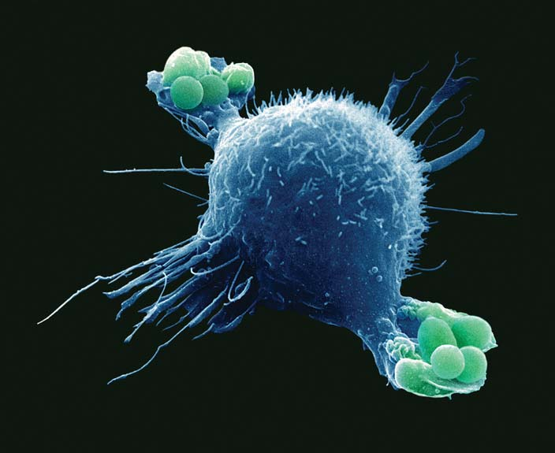
964 Capítulo 45
resultando en una enfermedad autoinmune , como la artritis reumatoide o esclerosis múltiple. Algunas veces, el sistema inmunológico ataca cuando sería preferible que no lo hiciera. Por ejemplo, las respuestas inmunológicas pueden destruir las células del corazón o los trasplantes de riñón. La inmunología , el estudio de los sistemas de defensa interna de los humanos y otros animales, es uno de los campos de más rápida evolución y más emocionantes de la investigación biomédica. El sistema inmunológico es una colección de muchos tipos de células y tejidos dispersos por todo el cuerpo. La señalización celular efi caz entre estas células es crítica. Las células del sistema inmunológico se comunican directamente por medio de sus moléculas superfi ciales e indirectamente por la liberación de moléculas mensajeras. Uno de los focos de atención más importantes de la investigación es la comprensión de los complicados sistemas de señalización de sistema inmunológico. Los investigadores también están trabajando para comprender mejor la evolución del sistema inmunológico. Uno de los logros más destacados de los inmunólogos ha sido el desarrollo de vacunas que evitan enfermedades. Otro ha sido el desarrollo de técnicas para realizar trasplantes exitosos de tejidos y órganos. Estrategias más elaboradas de investigación, como la transferencia de genes, han permitido a los inmunólogos ampliar sus conocimientos sobre las células y moléculas que interactúan para generar respuestas inmunológicas. Estas técnicas han conducido al desarrollo de nuevos métodos para la prevención y el tratamiento de la enfermedad. Se ha aprendido mucho, y muchos desafíos quedan por delante.
45.1 EVOLUCIÓN DE LAS RESPUESTAS INMUNOLÓGICAS
OBJETIVOS DE APRENDIZAJE
1 Distinguir entre respuestas inmunológicas no específi cas y específi cas. 2 Comparar, en términos generales, las respuestas inmunológicas que han evolucionado en los invertebrados y los vertebrados.
Una respuesta inmunológica es el proceso de reconocimiento de macromoléculas extrañas o peligrosas y responder para eliminarlas. El sistema inmunológico distingue entre lo propio y lo ajeno . Este reconocimiento es posible porque cada individuo es bioquímicamente único. Las células tienen proteínas superfi ciales diferentes a las que están sobre las células de otra especie o inclusive de otros individuos de la misma especie. El sistema inmunológico de un animal reconoce sus propias células y puede identifi car como extrañas las de otros organismos. Así, las macromoléculas distintivas de un patógeno que invade a un animal estimulan las respuestas defensivas del animal. Una sola batería puede tener desde 10 hasta más de 1000 macromoléculas distintivas sobre su superfi cie. El sistema inmunológico también responde a señales de peligro de tejidos lesionados, como las proteínas liberadas cuando las membranas celulares están dañadas. Dos tipos principales de respuestas inmunológicas protegen al cuerpo: no específi cas y específi cas ( FIGURA 45-1 ). Las respuestas inmunológicas no específi cas proporcionan protección general e inmediata contra patógenos, parásitos, algunas toxinas y medicamentos, así como células cancerosas. Las respuestas inmunológicas no específi cas se denominan inmunidad innata . Las respuestas inmunológicas no específi cas evitan que la mayoría de los patógenos entren al cuerpo y destruyen
rápidamente a los que penetran las defensas externas. Por ejemplo, la cutícula o piel constituye una barrera física para los patógenos que entran en contacto con el cuerpo de un animal. La respuesta infl amatoria y la fagocitosis son defensas no específi cas que destruyen bacterias que se las arreglan para penetrar las defensas externas. Las respuestas inmunológicas específi cas son altamente específi cas para diversas micromoléculas. Las respuestas inmunológicas específi cas también se denominan inmunidad adquirida . Cualquier molécula que las células del sistema inmunológico reconocen explícitamente como extraña se denomina antígeno . Los antígenos más poderosos son las proteínas, aunque algunos polisacáridos y lípidos también son antígenos. Las respuestas inmunológicas específi cas están dirigidas hacia antígenos particulares y suelen incluir la producción de anticuerpos , proteínas altamente especializadas que reconocen y se unen con antígenos específi cos. Una característica importante de las respuestas inmunológicas específi cas es la memoria inmunológica , que signifi ca que el sistema “recuerda” moléculas extrañas o peligrosas y responde más efi cazmente a encuentros repetidos con las mismas moléculas. Los inmunólogos aún no comprenden qué señales del sistema inmunológico no responden a moléculas extrañas que son dañinas. Algunos investigadores han sugerido que la evolución del sistema inmunológico permitió a los animales gestionar bacterias y otros microbios que son benéfi cos, así como a defenderse contra bacterias y micro bios dañinos.
Los invertebrados lanzan respuestas inmunológicas no específi cas
Muchos invertebrados (cnidarios, anélidos y moluscos) están cubiertos por moco que atrapa y mata a los patógenos. Esqueletos externos duros como cutículas, conchas y exoesqueletos quitinosos protegen el cuerpo de nematodos, la mayoría de los moluscos, artrópodos y muchos otros invertebrados (vea el capítulo 31). Todas las especies animales estudiadas tienen fagocitos que se mueven por el cuerpo, envolviendo y destruyendo bacterias y otras materias extrañas. En los moluscos, sustancias en la hemolinfa (sangre) mejora la fagocitosis. Los anélidos son los únicos invertebrados conocidos que poseen células asesinas naturales , un tipo de linfocito que destruye células tumorales y células infectadas por virus. Los investigadores han descrito más de 800 péptidos antimicrobianos , compuestos químicos que inactivan o matan patógenos. Los investigadores han identifi cado péptidos antimicrobianos en todos los eucariotes (incluyendo plantas) que han sido estudiados, sugiriendo un temprano origen común de estas moléculas. Cuando los investigadores inyectan un antígeno en un insecto, en unas cuantas horas se producen hasta 15 péptidos antimicrobianos diferentes. Estos compuestos químicos son muy efi caces en parte debido a su pequeño tamaño (una docena o menos aminoácidos), lo que facilita su rápida producción y difusión. ¿Qué estimula a un animal a producir péptidos antimicrobianos y otras defensas inmunológicas? Las células animales tienen receptores que reconocen tipos comunes de moléculas patógenas y luego activan una o más vías de transducción de señales, resultando en la producción de péptidos antimicrobianos. Todos los animales estudiados producen células y moléculas que se desplazan hacia el sitio de la infección y producen una respuesta infl amatoria. Los invertebrados distinguen entre sus propias células y las de otras especies. Por ejemplo, las células de la esponja tienen glicoproteínas específi cas sobre sus superfi cies que les permiten reconocer a su propia especie. Cuando las células de dos especies diferentes se mezclan, se ordenan a sí mismas según la especie. Cuando dos especies diferentes de esponjas son obligadas a crecer en contacto mutuo, el tejido es destruido
El sistema inmunológico: Defensa interna 965
descubrimiento sugiere que algunos invertebrados pueden tener alguna capacidad para lanzar respuestas inmunológicas específi cas.
Los vertebrados lanzan respuestas inmunológicas no específi cas y específi cas
Así como los invertebrados, los vertebrados dependen de respuestas inmunológicas no específi cas para su asalto inicial en la invasión de patógenos. No obstante, sus respuestas inmunológicas específi cas rápidamente afi nan las respuestas no específi cas más generales. El sistema linfático especializado que ha evolucionado en los vertebrados incluye células como los linfocitos , glóbulos blancos especializados en transportar respuestas inmunológicas, y órganos como nodos linfáticos (vea el capítulo 44). Las respuestas inmunológicas específi cas, incluyendo la acción por linfocitos y anticuerpos, pueden haber evolucionado en primera instancia en vertebrados con mandíbulas. En el aná-
a lo largo de la región de contacto. Los cnidarios (como los corales), los anélidos (como las lombrices), los artrópodos (como los insectos) y los equinodermos (como las estrellas de mar) rechazan tejido injertado de otros animales, inclusive de la misma especie. Ciertos cnidarios, artrópodos, algunos equinodermos y cordados simples (como los tunicados) parecen recordar antígenos durante un breve período. Como ya se mencionó, la memoria inmunológica permite que el cuerpo responda más efi cazmente cuando encuentra los mismos patógenos de nuevo. Aunque ciertos invertebrados demuestran algo de especifi cidad y memoria, sus respuestas inmunológicas son primordialmente no específi cas. Hasta donde se sabe, los equinodermos y los tunicados son los grupos más antiguos de animales que tuvieron glóbulos blancos diferenciados que realizan funciones inmunológicas limitadas. Los investigadores han identifi cado dos genes en el erizo de mar púrpura que son bastante semejantes a genes de vertebrados en la producción de anticuerpos. Este
Células dendríticas Fagocitos (se muestra un macrófago)
Inmunidad mediada por células
Inmunidad mediada por anticuerpos
Fagocitosis
Células NK Citocinas y complemento
Receptores de reconocimiento de patrones
Barreras, por ejemplo revestimiento epitelial en los sistemas respiratorio y digestivo
Péptidos antimicrobianos y otros compuestos
Inflamación
RESPUESTAS INMUNOLÓGICAS ESPECÍFICAS (ADAPTATIVAS) RESPUESTAS INMUNOLÓGICAS NO ESPECÍFICAS (INNATAS)
LOS PATÓGENOS INVADEN TEJIDOS
Rápido Requiere de varias horas a varios días
FIGURA 45-1 Animada Visión general de las respuestas inmunológicas humanas Las respuestas inmunológicas no específi cas incluyen barreras que impiden la entrada de patógenos; receptores de reconocimiento de patrones; citocinas y complemento; células asesinas naturales (NK por sus siglas en inglés), células dendríticas, y fagocitos; e infl amación. Durante la infl amación, ciertas células liberan citocinas que activan respuestas inmunológicas específi cas; inmunidad mediada por células e inmunidad mediada por anticuerpos.

966 Capítulo 45
Los receptores de reconocimiento de patrones activan respuestas inmunológicas no específi cas
Cuando los patógenos vencen las defensas externas del cuerpo, sus propiedades químicas activan otras respuestas de defensa no específi cas, y la mayoría de los invasores son eliminados rápidamente. Las bacterias y otros microbios tienen ciertas proteínas y otras moléculas que no están presentes en las células de los humanos y otros mamíferos. Estos compuestos químicos (o partes específi cas de moléculas) que estimulan respuestas inmunológicas no específi cas se denominan patrones molecu lares asociados a patógenos, o PMAP. Cada grupo de microbios –virus, bacterias gram-positivas y hongos– comparten ciertos PMAP. Por ejemplo, ciertos virus tienen ARN de doble cadena y las bacterias grampositivas tienen peptidoglicano. Han evolucionado receptores de reconocimiento de patrones que reconocen PMAP como ajenos. Cuando estos receptores sobre fagocitos se unen con PMAP, se activan respuestas inmunológicas no específi cas. Por ejemplo, los fagocitos se vuelven más efi caces para tomar y destruir a los patógenos. Estos receptores también pueden transducir señales que estimulan la respuesta infl amatoria. El grupo más importante de receptores de reconocimiento de patrones, los receptores de tipo toll , se expresan en varios tipos de células. Los receptores de tipo toll (homólogos de una proteína conocida como proteína de tipo toll en el genoma Drosophila ) activan ciertos factores de transcripción. Estos factores de transcripción estimulan la expresión de genes que codifi can ciertas proteínas, como las citocinas , que son importantes moléculas de señalización.
Las células de sistemas inmunológicos no específi cos destruyen patógenos y elaboran productos químicos
Las respuestas inmunológicas no específi cas dependen de la acción de varios tipos de células, incluyendo fagocitos, células asesinas naturales y células dendríticas. Los neutrófi los , el tipo más común de glóbulos blancos (vea el capítulo 44) y los macrófagos son los fagocitos más importantes en el cuerpo. Recuerde que la fagocitosis es el proceso por el cual las células envuelven microorganismos, materia extraña u otras células (vea la fi gura 5-21). Un neutrófi lo puede fagocitar alrededor de 20 bacterias antes de ser desactivado (tal vez a causa de fugas de enzimas lisosomales) y muere. Los macrófagos son grandes fagocitos que se desarrollan a partir de monocitos , un tipo de glóbulo blanco no granular. Un macrófago puede fagocitar alrededor de 100 bacterias durante su vida útil ( FIGURA 45-2 ). Los macrófagos también liberan agentes antivirales. Algunos macrófagos patrullan los tejidos del cuerpo, envolviendo células dañadas o materia extraña (incluyendo bacterias). Otros macrófagos permanecen en un sitio y destruyen bacterias que pasan. Por ejemplo, los sacos de aire en los pulmones contienen un gran número de macrófagos que destruyen materia extraña que entra con el aire inhalado. Los macrófagos de los vertebrados tienen receptores de tipo toll que reconocen ciertos PMAP y responden al producir citocinas. Por ejemplo, un lipopolisacárido encontrado en bacterias gram-negativas estimula a los macrófagos. En respuesta, los macrófagos liberan citocinas que mejoran la respuesta infl amatoria. Las bacterias, ¿pueden contrarrestar el ataque de los fagocitos? En las bacterias han evolucionado muchas estrategias que las protegen de sus huéspedes. El Streptococcus pneumoniae , por ejemplo, tiene paredes o
lisis que sigue, nos enfocamos en el sistema inmunológico humano, con referencias a los mecanismos inmunes de otros animales.
Repaso
■ ¿Cuáles son los dos caminos clave en que las respuestas inmunológicas específi cas difi eren de las respuestas inmunológicas no específi cas?
■ En general, ¿cuál es la diferencia entre las respuestas inmunológicas de los vertebrados y las de los invertebrados?
45.2 RESPUESTAS INMUNOLÓGICAS NO ESPECÍFICAS
OBJETIVO DE APRENDIZAJE
3 Describir respuestas inmunológicas no específi cas, incluyendo barreras físicas; identifi cación por receptores de reconocimiento de patrones; acciones de fagocitos y otras células; acciones de citocinas y complemento; y la respuesta infl amatoria.
Las respuestas inmunológicas no específi cas también se conocen como inmunidad innata . Los mecanismos inmunes no específi cos siempre están presentes y listos para responder rápidamente a patógenos invasores. Las respuestas inmunológicas no específi cas proporcionan protección inmediata y general contra patógenos, parásitos, algunas toxinas y drogas, así como células cancerosas. Las defensas no específi cas incluyen barreras físicas, como la piel; la acción de receptores de reconocimiento de patrones; acción de proteínas como las citocinas y las que forman el sistema del complemento; acciones por células, incluyendo fagocitos, células dendríticas y células asesinas naturales (NK); y la respuesta infl amatoria.
Las barreras físicas impiden la entrada de la mayoría de patógenos al cuerpo
Una primera línea de defensa de un animal es la cubierta exterior –cutícula, concha, quitina o piel– que bloquea la entrada de patógenos. El tracto digestivo (gastrointestinal), las vías respiratorias, el tracto urinario y la vagina, todos están abiertos hacia el exterior del cuerpo. Los revestimientos epiteliales de estas vías son barreras entre el entorno externo y el interior del cuerpo. Varios mecanismos dentro de las barreras epiteliales expulsan, atrapan o destruyen patógenos. Por ejemplo, los patógenos que entran al cuerpo con aire inhalado pueden ser fi ltrados por vellos en la nariz o atrapados en el pegajoso revestimiento mucoso del tracto respiratorio. Una vez atrapados, son destruidos por fagocitos. Las barreras físicas también están equipadas con armas químicas. Por ejemplo, péptidos antimicrobianos denominados defensinas son producidos por el epitelio de la piel de muchos animales, incluyendo los mamíferos. Las defensinas, que también se encuentran en la saliva, son tóxicas para bacterias y hongos. El moco contiene una sustancia, denominada mucina , que destruye químicamente a los invasores. La lisozima , una enzima que se encuentra en lágrimas y otros líquidos del cuerpo, ataca las paredes celulares de muchas bacterias grampositivas. Moco, lágrimas, orina y otros líquidos del cuerpo lavan patógenos fuera del cuerpo e impiden su proliferación. Las bacterias invasoras también deben competir con la población de microbios que habitan en nuestra piel y otros tejidos superfi ciales. Estos microbios residentes normalmente no son dañinos.
El sistema inmunológico: Defensa interna 967
Las células NK liberan citocinas, así como enzimas que destruyen células objetivo. Las perforinas son enzimas que ocasionan la formación de poros en la membrana plasmática de la célula objetivo, permitiendo que granzimas , otro tipo de enzima, entren en la célula. A continuación, las granzimas activan una cascada de reacciones, provocando que la célula se autodestruya por apoptosis , muerte programada de la célula. Varias citocinas estimulan la actividad de las células NK. Cuando los niveles de células NK son altos, es posible intensifi car la resistencia a ciertos tipos de cáncer. Estresores psicológicos pueden disminuir la actividad de las células NK, mejorando así el crecimiento de tumores. Los biólogos identifi caron por primera vez las células dendríticas en 1868 y luego las volvieron a descubrir en 1973, aunque el pequeño número de estas células difi cultó su estudio hasta que se desarrollaron técnicas más elaboradas en la década de 1990. Su nombre se deriva de sus largas extensiones citoplasmáticas denominadas dendritas (que no deben confundirse con las dendritas de las neuronas). Las células dendríticas se desarrollan a partir de células precursoras en la médula ósea y de monocitos. Las células dendríticas están estacionadas estratégicamente en todos los tejidos del cuerpo que entran en contacto con el entorno: la piel y los revestimientos epiteliales de las vías digestiva, respiratoria y vaginal. Cuando el tejido es infectado por patógenos, los PAMP activan las células dendríticas. Un tipo de célula dendrítica responde a infecciones virales. Las células dendríticas producen interferonas , citocinas antivirales. Ciertos tipos de células dendríticas activadas capturan antígenos microbianos por fagocitosis o por endocitosis mediada por receptores (vea el capítulo 5).
Las citocinas y el complemento median respuestas inmunológicas
Las células del sistema inmunológico secretan un número extraordinario de péptidos y proteínas antimicrobianos regulatorios. Dos grupos
cápsulas celulares que resisten la acción de las enzimas lisosomales fagocitas. Otras bacterias liberan enzimas que destruyen las membranas lisosomales. Luego, las poderosas enzimas lisosomales se derraman hacia el citoplasma y pueden destruir al fagocito. Las células asesinas naturales (NK) son grandes linfocitos granulares que se originan en la médula ósea. Son casi 10% de los linfocitos en circulación. Las células NK son activas contra células tumorales y células infectadas por algunos tipos de virus. Destruyen células objetivo por medio de procesos no específi cos y específi cos (mediados por anticuerpos).
Lennart Nilsson, Boehringer Ingelheim International GmbH Lennart Nilsson, Boehringer Ingelheim International GmbH
Sebastian Kaulitzki/Shuetterstock
5 μ m
0.5 μ m
Un macrófago extiende un pseudópodo hacia una bacteria invasora Escherichia coli que ya está multiplicándose.
Una bacteria está atrapada dentro del pseudópodo envolvente.
Un macrófago toma bacterias atrapadas junto con su propia membrana plasmática. La membrana plasmática del macrófago se envolverá sobre las bacterias, y poderosas enzimas lisosomales las destruirán.
FIGURA 45-2 Fagocitosis Los macrófagos son guerreros efi cientes. Estas micrografías a colores muestran macrófagos fagocitando bacterias.
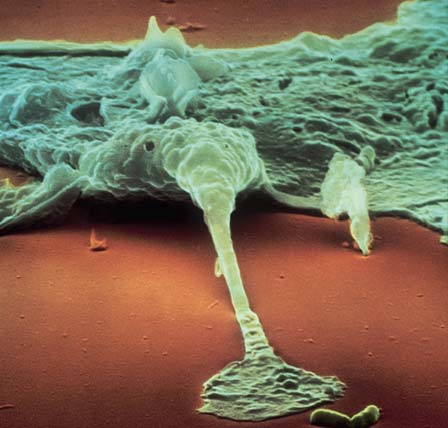
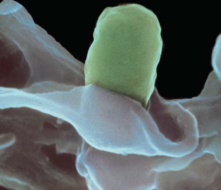
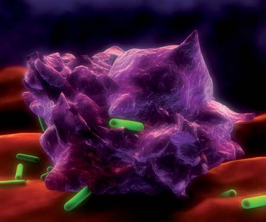
968 Capítulo 45
que destruía células tumorales. El FNT es secretado principalmente por macrófagos y por células T , un tipo de linfocito. Cuando hay afecciones graves se producen grandes cantidades de FNT. Luego, el FNT se hace circular en la sangre y puede tener efectos ampliamente distribuidos. Por ejemplo, actúa sobre el hipotálamo, induciendo fi ebre. Algunas veces la infección por bacterias gram-negativas, como Salmonella typhi , resulta en la liberación de grandes cantidades de FNT y otras citocinas. Esto resulta en una cascada de reacciones que conducen a shock séptico , una condición potencialmente fatal que puede implicar fi ebre elevada y malfuncionamiento del sistema circulatorio. Así, algunas veces las citocinas pueden tener efectos dañinos. Las interleucinas son un grupo diverso de citocinas secretadas principalmente por macrófagos y linfocitos. Las interleucinas están numeradas según su orden de descubrimiento. Regulan interacciones entre glóbulos blancos, como linfocitos y macrófagos, y otras células. La interleucina 1 ( IL 1 ) funciona con el FNT en la mediación de la infl amación. La interleucina 12 ( IL 12 ) estimula las células NK, así como las células T, para producir IFN-gamma. Algunas interleucinas tienen efectos ampliamente distribuidos. Cuando hay infección, la IL-1 puede restablecer el termostato humano en el hipotálamo, resultando en fi ebre y sus síntomas. La sobreproducción de ciertas interleucinas ha sido asociada con enfermedades clínicas, incluyendo aterosclerosis. Las quimiocinas , un gran grupo de citocinas, son moléculas de señalización que atraen, activan y dirigen el movimiento de varias células del sistema inmunológico. Por ejemplo, regulan la migración de glóbulos blancos de la sangre a los tejidos. Algunas quimiocinas son producidas en respuesta a la infección y son mediadoras de la respuesta infl amatoria.
El sistema del complemento promueve la destrucción de patógenos y mejora la infl amación
Los fagocitos secretan citocinas que activan el sistema del complemento . El complemento , así denominado porque “complementa” la acción de otras respuestas defensivas, consta de más de 20 proteínas presentes en el plasma y otros líquidos corporales. Las semejanzas en proteínas del complemento en muchas especies, incluyendo cangrejos de herradura, erizos de mar, tunicados y mamíferos, sugieren que estas molécu las evolucionaron hace millones de años y que se han conservado bastante. Normalmente, las proteínas del complemento están inactivas hasta que el cuerpo es expuesto a un antígeno. Ciertos patógenos activan directamente el sistema del complemento. En otros casos, la unión de un antígeno y un anticuerpo estimula la activación. La activación del complemento implica una cascada de reacciones; cada componente actúa sobre el siguiente en la serie. Luego, las proteínas del sistema del complemento actúan para destruir los patógenos. Las proteínas del complemento están activas contra muchos antígenos, y sus acciones son no específi cas; las proteínas (1) lisan virus, bacterias y otras células; (2) recubren patógenos, haciéndolos menos “resbalosos”, de modo que los macrófagos y los neutrófi los los fagociten con más facilidad; (3) atraen glóbulos blancos al sitio de la infección, un proceso denominado quimiotaxis ; y (4) se unen a receptores específi cos sobre células del sistema inmunológico, estimulando acciones específi cas, como secretar moléculas reguladoras e incrementar la respuesta infl amatoria.
La infl amación es una respuesta de protección
La respuesta infl amatoria , o infl amación , es una de las respuestas clave del cuerpo a infecciones o daños. El daño en tejidos ocasionado por in-
principales de moléculas que son críticas en respuestas de defensa no específi cas son las citocinas y el complemento.
Las citocinas son moléculas de señalización importantes
Las citocinas son un grupo grande y diverso de péptidos y proteínas (la mayoría son glicoproteínas) que funcionan como moléculas de señalización importantes y realizan funciones regulatorias. Los mismos tipos de citocinas pueden ser producidos por muchos tipos diferentes de células. Asimismo, una citocina puede afectar muchos tipos diferentes de células. Justo como las funciones de las respuestas inmunológicas no específi cas y específi cas se superponen, las acciones de las citocinas de estos subsistemas también se superponen. Por ejemplo, las citocinas producidas por células no específi cas como los macrófagos pueden activar linfocitos implicados en respuestas inmunológicas específi cas. Las citocinas ayudan a regular la intensidad y duración de las respuestas inmunológicas. También son importantes en la regulación de muchos otros procesos biológicos, como crecimiento, reparación y activación celular. Las citocinas se unen a receptores de membrana específi cos sobre células objetivo. Estas moléculas de señalización pueden actuar como agentes autocrinos , que afectan a las mismas células que los producen, o como agentes paracrinos , que regulan la actividad de células próximas (vea el capítulo 49). Cuando las citocinas se producen en grandes cantidades, algunas actúan como hormonas que circulan en la sangre y afectan distintos tejidos. Los biólogos identifi can los tipos de citocinas según su función u origen. Analizamos varios ejemplos, incluyendo interferonas , factores de necrosis tumoral , interleucinas y qui miocinas . Cuando algunas células están infectadas por virus u otros parásitos intracelulares (algunos tipos de bacteria, hongos y protozoos), responden secretando citocinas denominadas interferonas . Las interferonas tipo I son producidas ya sea por sus macrófagos o por fi broplastos , células que producen las fi bras de tejidos conectivos. Las interferonas tipo I inhiben la replicación viral y activan células NK que poseen acciones antivirales. Los virus producidos en células expuestas a interferonas tipo I no son muy efi caces para infectar otras células. Algo interesante es que aun cuando las interferonas tipo I son producidas como parte de la respuesta inmunológica no específi ca, una vez liberadas pueden regular la acción de ciertas células de la respuesta inmunológica específi ca. La interacción de los mecanismos inmunológicos de respuesta no específi ca y respuesta específi ca es un ejemplo del poder y la complejidad del sistema inmunológico. La interferona tipo II (también denominada IFN-gamma) es crítica en ambos tipos de inmunidad: no específi ca y específi ca. En la inmunidad no específi ca, la interferona tipo II estimula a los macrófagos para destruir células tumorales y células huésped que han sido infectadas por virus. (La interferona activa la transcripción de genes que codifi can enzimas necesarias para producir compuestos antimicrobianos en los lisosomas). Desde su descubrimiento en 1957, las interferonas han sido el centro de atención de numerosas investigaciones. Las compañías farmacéuticas ahora usan técnicas de recombinación de ADN para producir grandes cantidades de ciertas interferonas. La Food and Drug Administration (FDA) de Estados Unidos ha aprobado las interferonas para el tratamiento de diversas enfermedades, incluyendo hepatitis B y hepati tis C, verrugas genitales, varios tipos de cáncer (por ejemplo, leucemia), un tipo de esclerosis múltiple y el sarcoma de Kaposi asociado al SIDA. En respuesta a bacterias gram-negativas, ciertos otros patógenos, o algunos tumores, el factor de necrosis tumoral (FNT) estimula a las células inmunes a iniciar una respuesta infl amatoria. De hecho, el FNT se denominó así porque primero fue identifi cado como un compuesto
El sistema inmunológico: Defensa interna 969
lidad de los capilares. Fluido y anticuerpos salen de la circulación y entran a los tejidos. A medida que el volumen del fl uido intersticial aumenta, ocurre edema . El edema, junto con la acción de ciertas enzimas en el plasma, ocasiona el dolor que caracteriza la infl amación. 3. Aumento de fagocitosis . El incremento en el fl ujo sanguíneo lleva grandes cantidades de neutrófi los y otras células fagocitas a la región infl amada a pocas horas de ocurrida la lesión o infección del tejido. Los fagocitos migran fuera de los capilares hacia los tejidos infectados. Los macrófagos secretan quimiocinas y otras citocinas que reclutan y activan más neutrófi los. Una de las funciones principales de la infl amación es el aumento de fagocitosis.
Aunque la respuesta infl amatoria empieza como una respuesta local, algunas veces el cuerpo entero puede estar implicado. La fi ebre , un síntoma clínico común de infl amación extendida, ayuda al cuerpo a combatir la infección. Una elevada temperatura corporal aumenta la fagocitosis e interfi ere con el crecimiento y la replicación de microorganismos. La fi ebre rompe los lisosomas, destruyendo las células infectadas por virus. La fi ebre también promueve la actividad de ciertos linfocitos. La fi ebre baja acelera la recuperación a corto plazo. La respuesta infl amatoria es vital en la superación de la infección, pero la infl amación crónica contribuye a muchas enfermedades crónicas.
vasión de patógenos o lesiones físicas activa un factor de coagulación en el plasma sanguíneo que activa tres cascadas moleculares de interconexión diferentes en el plasma, incluyendo la cascada de coagulación. Muchas de estas reacciones generan moléculas; por ejemplo, el péptido bradicinina , que media el proceso infl amatorio. Estos mediadores de plasma dilatan los vasos sanguíneos y aumentan la permeabilidad capilar ( FIGURAS 45-3 y 45-4 ). Muchas citocinas señalan a glóbulos blancos para que lancen la respuesta infl amatoria, y algunas citocinas ayudan a regular el proceso. La infl amación también activa el sistema del complemento. Las características clínicas de la infl amación son calor, enrojecimiento, edema (hinchazón), y dolor. La respuesta infl amatoria incluye tres procesos principales.
- Vasodilatación . Los macrófagos y los mastocitos estacionados en los tejidos responden rápidamente a tejido dañado o a infecciones. Los mastocitos, que se encuentran en la mayoría de los tejidos cerca de los vasos sanguíneos, liberan histamina , citocinas y otros compuestos que dilatan los vasos sanguíneos en el área infectada. El diámetro dilatado de los vasos sanguíneos lleva más sangre al área. El incremento de fl ujo de sangre calienta la piel y enrojece a la piel que contiene poco pigmento. 2. Aumento en la permeabilidad de los capilares . La histamina y otros compuestos liberados por los mastocitos aumentan la permeabi-
Durante la respuesta infl amatoria, los vasos capilares se dilatan y se vuelven más permeables, llevando más fagocitos al área infectada; aumenta la fagocitosis.
Células lesionadas
Activan moléculas en el plasma, mastocitos, macrófagos
Aumento en la permeabilidad capilar
Edema Dolor Los anticuerpos y los fagocitos pasan de la sangre hacia el área inflamada
Los fagocitos migran hacia la región Vasodilatación
Aumento de flujo sanguíneo hacia el área
Enrojecimiento Lleva fagocitos, nutrientes, anticuerpos
Aumento de temperatura
Aumento en fagocitosis
Liberación de TNF, IL-1 Respuesta sistémica
Fiebre
PATÓGENOS INVADEN LOS TEJIDOS
FIGURA 45-3 Animada Visión general de la respuesta infl amatoria Cuando la piel está lesionada, entran bacterias (y otros patógenos) a los tejidos. La lesión en la piel activa un factor de coagulación en la sangre que acciona tres vías moleculares en el plasma. Algunas de las moléculas producidas dilatan vasos sanguíneos y aumentan la permeabilidad capilar.
PUNTO CLAVE
970 Capítulo 45
45.3 RESPUESTAS INMUNOLÓGICAS ESPECÍFICAS
OBJETIVOS DE APRENDIZAJE
4 Contrastar la inmunidad mediada por células y la inmunidad mediada por anticuerpos, y proporcionar una visión general de cada proceso. 5 Describir las funciones de las células principales del sistema inmunológico específi co y del complejo de histocompatibilidad más importante.
Las respuestas inmunológicas específi cas también se conocen como inmunidad adaptativa o inmunidad adquirida . En contraste con mecanismos inmunológicos no específi cos que siempre están presentes y listos para responder a infecciones, las respuestas inmunológicas específi cas se desarrollan en respuesta a una infección y se adaptan a los patógenos específi cos que invaden el cuerpo. Estas respuestas inmunológicas son altamente específi cas para macromoléculas distintas.
Por ejemplo, la infl amación ha sido vinculada con la aterosclerosis, la artritis reumatoide, la enfermedad de Crohn, la diabetes, la enfermedad de Alzheimer y cáncer. Aunque aún no se comprenden los detalles, parece que la infl amación crónica ocurre cuando los mecanismos homeostáticos que normalmente desactivan la respuesta infl amatoria no funcionan de manera apropiada. Como factores de riesgo para la infl amación crónica, los investigadores han identifi cado infecciones prolongadas, fumar cigarrillos, enfermedad de las encías y obesidad.
Repaso
■ ¿Qué barreras impiden que la mayoría de patógenos invadan el cuerpo?
■ ¿Cuál es la función de los receptores de reconocimiento de patrones?
■ ¿Cuál es la función de las células NK? ¿Y la de los macrófagos?
■ ¿Cuáles son los principales grupos de citocinas? ¿Cuál es la función de cada grupo?
■ ¿Qué procesos están implicados en la respuesta infl amatoria?
3
1
2
2
3
1 Las bacterias invaden el tejido. La lesión activa factores de coagulación en la sangre. Estos factores activan vías que producen moléculas que dilatan los vasos sanguíneos y aumentan la permeabilidad.
Macrófagos y neutrófilos activados fagocitan bacterias. Los macrófagos secretan citocinas.
Los mastocitos activados liberan histamina y otros compuestos. Neutrófilo Histamina Mastocitos
Macrófago
Bacterias
Citocinas
Capilar
- Histamina, citocinas y otros compuestos liberados por los mastocitos aumentan la vasodilatación y la permeabilidad capilar. Ciertas citocinas atraen células fagocitas. Los macrófagos y los neutrófilos en el área infectada envuelven y destruyen las bacterias. Los macrófagos secretan citocinas que reclutan más neutrófilos. Los mastocitos secretan histamina, citocinas y otras sustancias que dilatan los vasos capilares.
FIGURA 45-4 Animada La respuesta infl amatoria Las bacterias están representadas por bastones rojos; las citocinas, por puntos verdes; las histaminas, por cuadrados anaranjados; y las secreciones de otros mastocitos, por puntos anaranjados.


El sistema inmunológico: Defensa interna 971
Los linfocitos son los guerreros más importantes en respuestas inmunológicas específi cas
Los linfocitos son importantes en la inmunidad específi ca y en la inmunidad no específi ca. Las células asesinas naturales (células NK) se abordaron en el análisis previo de inmunidad no específi ca. Recuerde que las células NK son linfocitos que matan células infectadas por virus y células tumorales. Los linfocitos T , o células T , y los linfocitos B , o células B , funcionan en la inmunidad específi ca. Las células T son responsables de la inmunidad mediada por células . Son los soldados celulares del cuerpo. Las células T se desplazan hacia el sitio de infección y atacan las células del cuerpo infectadas por patógenos invasores, así como a células extrañas (como las que se introducen en injertos de tejido o trasplantes de órganos). Las células T también destruyen células modifi cadas por mutaciones (células cancerosas). Las células B son responsables de la inmunidad mediada por anticuerpos . Las células B maduran en células de plasma , que producen anticuerpos específi cos. Los anticuerpos se unen a antígenos específi cos, neutralizándolos o marcándolos para su destrucción. La inmunidad mediada por anticuerpos es una de las estrategias de defensa química más importantes del cuerpo. Todos los linfocitos se desarrollan a partir de células madre en la médula ósea. Las células B completan su desarrollo en la médula ósea adulta.
Mientras las respuestas inmunológicas no específi cas destruyen patógenos e impiden la dispersión de la infección, el cuerpo moviliza sus respuestas inmunológicas específi cas. Se requieren varios días para activar respuestas inmunológicas específi cas, pero una vez engranados, estos mecanismos son extremadamente efi caces. Como ya se analizó, las respuestas inmunológicas específi cas están dirigidas precisamente para destruir antígenos específi cos, y poseen memoria inmunológica. Dos tipos de respuestas inmunológicas específi cas son la inmunidad mediada por células y la inmunidad mediada por anticuerpos .
En las respuestas inmunológicas específi cas están implicados muchos tipos de células
En la FIGURA 45-5 se muestran los principales tipos de células del sistema inmunológico específi co. Dos tipos fundamentales de células que participan en respuestas inmunológicas específi cas son los linfocitos y las células presentadoras de antígeno . Los fagocitos y muchas otras células importantes en respuestas inmunológicas no específi cas también participan en respuestas específi cas. Los eosinófi los , por ejemplo, son glóbulos blancos que liberan proteínas, incluyendo citocinas, de sus gránulos. Algunas de estas citocinas son importantes en respuestas inmunológicas no específi cas. Los eosinófi los también liberan proteínas tóxicas para gusanos parásitos.
4
4
La histamina y las citocinas dilatan los vasos sanguíneos y aumentan y la permeabilidad capilar.
5
5
Las citocinas atraen fagocitos al sitio de la infección.
6 6 Aumento de fagocitosis. Monocito
Neutrófilo
Neutrófilos
Citocinas
Mastocitos Histamina
Macrófago
Capilar dilatado y permeable
- Una gran cantidad de monocitos y células fagocitas pasan a través de los capilares ahora dilatados y permeables hacia el área infectada. Los monocitos se desarrollan en macrófagos. Aumenta la fagocitosis.


972 Capítulo 45
proceso complicado que suele requerir la participación de un tipo particular de célula T. Cuando una célula B está activada, se divide rápidamente para formar un clon de células idénticas. Las células B clonadas se diferencian en células de plasma , que producen anticuerpos. ¡Una célula de plasma puede producir más de 10 millones de moléculas de anticuerpos por hora! El anticuerpo se une al antígeno que activó originalmente las células B. Algunas células B activadas no se convierten en células de plasma, sino en células B de memoria de larga duración que continúan produciendo pequeñas cantidades de anticuerpo después que el cuerpo ha superado una infección. En su camino de la médula ósea a los tejidos linfáticos, las células T son procesadas en la glándula timo. El timo produce células T inmunocompetentes , capaces de respuesta inmunológica. A medida que las células T se desplazan por el timo, se dividen muchas veces y desarrollan proteínas superfi ciales específi cas con sitios receptores distintivos.
Las células T maduran en la glándula timo (de donde deriva la T de su nombre). Grandes cantidades de linfocitos maduros residen en órganos linfáticos, incluyendo el bazo, los nodos linfáticos, las amígdalas y otros tejidos linfáticos posicionados estratégicamente en todo el cuerpo. Aunque las células T y las células B tienen apariencia semejante cuando se observan con un microscopio de luz, técnicas elaboradas como microscopia fl uorescente demuestran que estas células pueden ser diferenciadas por sus macromoléculas únicas en la superfi cie de la célula. Las células T y las células B tienen funciones e historias de vida diferentes y tienden a localizarse en regiones separadas del bazo, los nodos linfáticos y otros tejidos linfáticos. En la médula ósea se producen millones de células B diariamente. Cada célula B está genéticamente programada para codifi car un receptor de glicoproteína que puede unirse con un tipo específi co de antígeno. Cuando una célula B entra en contacto con un antígeno que se une con sus receptores, la célula B es activada. La activación de la célula B es un
Algunas células importantes en respuestas inmunológicas específi cas incluyen células (macrófagos y células dendríticas) y linfocitos (células T y células B). Estas células interactúan a través de una señalización compleja.
Médula ósea de las células madre
Las células T maduran en el timo Las células B maduran en la médula ósea
Migra a los nodos linfáticos Migra a los nodos linfáticos
Célula de plasma
Inmunidad mediada por células Inmunidad mediada por anticuerpos
Célula B Célula T
Célula T de memoria Célula B de memoria
Monocito
Macrófagos Célula dendrítica
Presentación de antígeno
Presentación de antígeno
Célula citotóxica T Célula T ayudadora
C o opera c ión
FIGURA 45-5 Algunas células clave en respuestas inmunológicas específi cas
PUNTO CLAVE
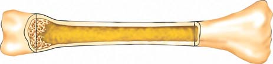
El sistema inmunológico: Defensa interna 973
las células presentadoras de antígeno, las células dendríticas, salen del revestimiento epitelial y, guiadas por quimiocinas, migran hacia los nodos linfáticos. Las moléculas coestimuladoras, junto con el antígeno mostrado, atraen y activan células T específi cas capaces de responder al antígeno. Así, las células dendríticas están especializadas para unir, procesar, transportar y presentar antígenos a las células T.
El complejo mayor de histocompatibilidad es responsable del autorreconocimiento
La habilidad del sistema inmunológico de los vertebrados para distinguir lo propio de lo ajeno depende bastante de un grupo de genes conectados estrechamente conocido como complejo de histocompatibilidad mayor (CHM) . En los humanos, el CHM también se denomina sistema antígeno de leucocitos humanos (ALH) . Los genes del CHM son polimorfos (variables). Al interior de las poblaciones hay múltiples alelos, más de 40 por cada sitio. Como resultado, las proteínas de la superfi cie celular que codifi can suelen ser diferentes en cada individuo. Con tantas combinaciones posibles, no hay la probabilidad de que un par de personas, excepto gemelos idénticos, tengan todas las mismas proteínas CHM en sus células. Mientras más relacionadas estén dos personas, más genes CHM tienen en común. Podría pensarse que las proteínas CHM son “huellas dactilares” bioquímicas. Los genes CHM codifi can antígenos CHM , denominados autoantígenos, que difi eren en estructura química, función y distribución de tejidos. Los genes CHM clase I codifi can glicoproteínas expresadas sobre la superfi cie de la mayoría de las células nucleadas. Estos antígenos se unen con antígenos extraños de virus u otros patógenos en el interior de la célula para formar un antígeno extraño: el complejo distrofi noglicoproteico CHM clase I. La célula muestra este complejo en su superfi cie y lo presen ta a las células T C . Así, cualquier célula infectada puede funcionar como una célula presentadora de antígeno y puede activar ciertas células T C . Los genes CHM clase II codifi can glicoproteínas expresadas principalmente sobre células presentadoras de antígeno “profesionales”: células dendríticas, macrófagos y células B. Estos antígenos CHM clase II se combinan con antígenos extraños de bacterias, y la célula presenta el complejo a las células T A . Los genes CHM clase III codifi can muchas proteínas secretadas implicadas en la respuesta inmunológica, incluyendo componentes del sistema del complemento y el FNT.
Repaso
■ ¿Cuál es la diferencia entre inmunidad mediada por células y la inmunidad mediada por anticuerpos?
■ ¿Cuáles son los dos tipos principales de células T? ¿Cuál es la función de las células B?
■ ¿Cuál es la función de las células presentadoras de antígeno? Describa dos tipos.
45.4 INMUNIDAD MEDIADA POR CÉLULAS
OBJETIVO DE APRENDIZAJE
6 Describir la secuencia de eventos en la inmunidad mediada por células.
Las células T y las células presentadoras de antígeno (principalmente células dendríticas y macrófagos) son responsables de la inmunidad mediada por células. Las células T destruyen células infectadas por virus y macrófagos que han ingerido bacterias “inteligentes”. Estas bacterias
La población de células T pasa por selección positiva y negativa. En la selección negativa , las células T en el timo que reaccionan a antígenos propios experimentan apoptosis. Los inmunólogos estiman que más de 90% de las células T que se desarrollan son seleccionadas negativamente. En la selección positiva , a las células T se les permite madurar si reconocen antígenos propios y se unen con antígenos extraños. Estas células T se diferencian y abandonan el timo para establecer su residencia en otros tejidos linfáticos o lanzar respuestas inmunológicas en tejidos infectados. Al seleccionar sólo células T idóneas, la glándula timo asegura que las células T sean capaces de distinguir entre las moléculas propias del cuerpo y antígenos extraños. La mayoría de las células T en el timo se diferencian justo antes del nacimiento y durante los primeros meses de vida posnatal. Si el timo es extirpado antes que este proceso se lleve a cabo, un animal no desarrolla inmunidad mediada por células. Si el timo se extrae después de este período, la inmunidad mediada por células no resulta tan seriamente dañada. Las células T son distinguidas por el receptor de células T (RCT) , que reconoce antígenos específi cos. Las dos poblaciones más importantes de células T son las células T citotóxicas y las células T ayudadoras (T A ). Las células T citotóxicas (T C ) también se denominan células CD8 porque tienen una glicoproteína denominada CD8 en la superfi cie de su membrana plasmática. Conocidas de manera menos formal como células asesinas T , las células T C reconocen y destruyen células que tienen antígenos extraños sobre sus superfi cies. Sus células objetivo incluyen células infectadas por virus, células cancerosas e injertos de tejidos extraños. Las células T ayudadoras (T A ), también conocidas como cé lulas CD4 , tienen una glicoproteína superfi cial denominada CD4. Las células T A secretan citocinas que activan a las células B, a las células T y a células macrófagas. Las células T reguladoras , conocidas como Tregs , constituyen una subpoblación de las células T A . Las Tregs ayudan a regular respuestas inmunológicas al suprimir las funciones de algunas células T. Después de una infección, las células T de memoria (tanto las células T C como las células T A ) permanecen en el cuerpo.
Las células presentadoras de antígeno activan las células T ayudadoras
Los macrófagos, las células dendríticas y las células B funcionan como células presentadoras de antígeno (CPA) “profesionales” que presentan antígenos extraños, así como sus propias proteínas superfi ciales. Las CPA permanecen inactivas hasta que sus receptores de reconocimiento de patrones reconocen patrones moleculares asociados a patógenos (PMAP) sobre patógenos. Una vez activada, una célula presentadora de antígeno ingiere el patógeno. Enzimas lisosomales dentro de las CPA degradan la mayoría, pero no todos los antígenos bacterianos. Las CPA muestran fragmentos de los antígenos disueltos sobre su superfi cie celular en asociación con un tipo de automolécula (CHM clase II, que se analiza después). Las células presentadoras de antígeno activadas expresan moléculas de señalización adicionales, denominadas moléculas coestimuladoras , junto con el antígeno mostrado. Estas células presentadoras de antígeno completamente funcionales presentan antígenos mostrados a las células T. Además de su función como células presentadoras de antígeno, los macrófagos secretan más de 100 compuestos diferentes, incluyendo citocinas y enzimas que destruyen bacterias. Cuando los macrófagos son estimulados por bacterias, secretan interleucinas que activan células B y ciertas células T. Se ha visto que las interleucinas también promueven respuestas inmunológicas no específi cas, como fi ebre. Los receptores sobre células dendríticas se unen a antígenos de microbios. Las células dendríticas toman estos antígenos, los procesan y muestran fragmentos de antígenos en la superfi cie de su célula. Luego,
974 Capítulo 45
escapan de las vesículas en que permanecen encerradas durante la fagocitosis. Escapan de la destrucción llevada a cabo por enzimas lisosomales al “ocultarse” en el citoplasma de los macrófagos. Las células T destruyen células que han sido modifi cadas de alguna manera, como las células cancerosas. También destruyen las células de injertos extraños como un hígado o un riñón trasplantados. ¿Cómo saben las células T a qué células apuntar? Las células T no reconocen antígenos a menos que se presenten idóneamente. Recuérdese que cuando un virus (u otro patógeno) infecta una célula, algo de la proteína viral se descompone en péptidos y se muestra con moléculas CHM clase I sobre la superfi cie de la célula. Sólo las células T con receptores que se unen al complejo CHM-antígeno específi co se vuelven activas. Hay dos poblaciones generales de células T: las células T A y las células T C . Cada célula T A expresa la glicoproteína denominada CD4 y cada célula T C expresa la CD8. Al interior de cada población general de célula T hay miles de diferentes especifi cidades de antígeno que los receptores de células T (RCT) pueden reconocer. La activación de las células T A , por ejemplo, ocurre cuando células fagocitas digieren antígeno y partes del antígeno se colocan dentro de sus complejos CHM superfi ciales. Luego, presentan esos antígenos a los receptores de células T en las células T A como parte de un complejo glicoproteico CHM clase II-antígeno extraño. Una vez activadas por el complejo glicoproteico CMH clase II-antígeno extraño mostrado sobre la superfi cie de células presentadoras de antígeno, las células T A activadas secretan interleucina 2. Esta citocina es un factor de crecimiento que estimula la proliferación de las células activadas. Las células T A se dividen varias veces, dando origen a un clon de células T A ( FIGURA 45-6 ). Este proceso se denomina expansión clonal . Algunas de las células T A producidas migran al sitio de infección. Estas células pueden producir muchos tipos diferentes de citocinas. Algunos atraen macrófagos al sitio de infección y promueven la destrucción de patógenos intracelulares. Otras funcionan principalmente en la promoción de inmunidad mediada por anticuerpos. Cada célula T C expresa la molécula CD8 sobre su superfi cie, así como más de 50,000 receptores de células T idénticos que se unen con un tipo específi co de antígeno. Las células T C reconocen antígenos que se les presentan como parte de un complejo glicoproteico CHM clase I-antígeno extraño. En general, menos de 1 en cada 100,000 células T tiene la misma especifi cidad antígena y puede responder. Después de la expansión clonal, hasta 1 de cada 10 células T C puede ser específi ca para el antígeno objetivo. La activación de células T C requiere por lo menos dos señales además del antígeno presentado: una señal coestimuladora y una señal interleucina. Una vez que una célula T C está activada, aumenta de tamaño y origina un clon de muchas células efectoras T C . Las células efectoras T C constituyen la infantería celular. Abandonan los nodos linfáticos y se las arreglan para llegar al área infectada, donde destruyen células objetivo pocos segundos después del contacto. Cuando una célula T C se combina con un antígeno sobre la superfi cie de la célula objetivo, destruye la célula casi de la misma manera en que las células NK destruyen sus células objetivo. Las células T C secretan perforinas que perforan la membrana plasmática de la célula objetivo. Luego, las granzimas inducen a la célula a autodestruirse por apoptosis. Después de liberar sustancias citotóxicas, la célula T se desengancha a sí misma de su célula víctima y busca un nuevo objetivo. La secuencia de eventos para la producción y función de las células T C en la inmunidad mediada por células puede resumirse como sigue:
Las células T y las células CPA son responsables de la inmunidad mediada por células.
La célula T A es activada por el complejo CHMantígeno extraño presentado por las células presentadoras de antígenos.
1
2
3
4
5
6
Célula T A
Células T de memoria
Citocinas
Células T C
La célula T A activada aumenta de tamaño y se divide por mitosis.
Desarrollo de clones: es producido el clon de componente T A .
Las células T A se diferencian y migran a tejidos infectados; liberan citocinas que actúan sobre otras células T y sobre macrófagos.
Las células T C , son activadas por un complejo CHMantígeno extraño que muestra células infectadas. Lás células T C forman clones (no mostrados) y migran hacia los tejidos infectados.
Las células T C liberan proteínas que destruyen a las células infectadas.
CPA
Patógeno ingerido
Complejo CHM-antígeno
Célula T receptora
Complejo CHM-antígeno
Célula infectada
Célula infectada destruida
Célula T A
FIGURA 45-6 Animada Inmunidad mediada por células Cuando una célula T A es activada por un complejo CHM-antígeno extraño presentado por una célula presentadora de antígenos y por citocinas, se divide y da origen a un clon de las células T A . Las células T C también son activadas por antígenos presentados sobre las superfi cies de células infectadas, y también forman un clon. Ambos tipos de células T migran al sitio de infección. Las células T A liberan citocinas que estimulan a las células T C y activan a los macrófagos de modo que fagociten a los patógenos. Las células T C liberan proteínas que destruyen a las células infectadas.
PUNTO CLAVE
El sistema inmunológico: Defensa interna 975
el virus invade la célula del cuerpo ¡ la célula infectada muestra un
complejo glicoproteico CHM clase I-antígeno extraño ¡ este complejo
activa células T C específi cas ¡ se producen clones de las células T C ¡ células efectoras T C migran al área de infección ¡ células T C
estimuladas por citocinas liberadas por células T A ¡ las células T C
liberan enzimas que destruyen células objetivo
Repaso
■ ¿Cómo funcionan las células T A en la inmunidad mediada por células?
■ ¿Cómo funcionan las células presentadoras de antígeno (CPA) en la inmunidad mediada por células?
■ ¿Cómo funcionan las células T C en la inmunidad mediada por células?
45.5 INMUNIDAD MEDIADA POR ANTICUERPOS
OBJETIVOS DE APRENDIZAJE
7 Resumir la secuencia de eventos en la inmunidad mediada por anticuerpos, incluyendo los efectos de complejos antígeno-anticuerpo sobre patógenos. 8 Describir la estructura y función básicas de un anticuerpo, y explicar la base de la diversidad de los anticuerpos. 9 Describir la base de la memoria inmunológica, y contrastar las respuestas inmunes primaria y secundaria. 10 Comparar la inmunidad activa con la inmunidad pasiva, y proporcionar ejemplos de cada una.
Hemos analizado dos tipos de moléculas que reconocen antígenos específi cos: los receptores de células T y las moléculas CHM. Aquí dirigimos nuestra atención al tercer tipo, los anticuerpos. Las células B son responsables de la inmunidad mediada por anticuerpos. Una célula B dada puede producir muchas copias de un anticuerpo específi co. Las moléculas anticuerpo sirven como receptores de la superfi cie celular que se combinan con antígenos. Sólo una célula B con un receptor complementario con la confi guración de un antígeno particular puede unirse a ese antígeno. El antígeno entra en la célula B por endocitosis mediado por receptor (vea el capítulo 5). Luego, el antígeno es degradado en fragmentos péptidos, y la célula B muestra fragmentos péptidos junto con proteínas CHM clase II sobre su superfi cie. En la mayoría de los casos, la activación de células B implica células presentadoras de antígeno (CPA) y células T A ( FIGURA 45-7 ). Las células T A estimulan a las células B para dividirse y producir anticuerpos. No obstante, primero deben activarse las células T A en sí. Las células T A no reconocen un antígeno que esté presente por sí solo. El antígeno debe ser presentado como parte de un complejo CHM clase II-antígeno extraño sobre la superfi cie de una CPA. Cuando una célula presentadora de antígeno que muestra un complejo CHM-antígeno extraño entra en contacto con una célula T A con receptores complementarios de células T, ocurre una interacción complicada. Múltiples señales químicas son enviadas de un lado a otro entre células. Por ejemplo, las CPA secretan interleucinas, como IL-1, que activan células T A . Las células B sirven como células presentadoras de antígeno para las células T. Una célula T A activada se une con el complejo CHM-antígeno extraño sobre la célula B. Luego, la célula T A libera interleucinas, que junto con el antígeno activan la célula B. Una vez activada, una célula B se divide por mitosis, dando origen a un clon de células idénticas ( FIGURA 45-8 ). Esta expansión clonal en
Célula B
Bacteria Antígeno
Célula B activada Citocinas
Célula T A
División celular
Antígeno extraño
Citocinas
Célula T A
Receptor
CPA
CPA
Complejo CHM-antígeno
Bacteria
Antígeno
1a Las CPA toman la bacteria, la descomponen y presentan antígenos extraños sobre su superficie en combinación con antígenos CHM clase II.
1b La célula B se combina de manera independiente con antígenos extraños, pero la célula B típicamente no está activa hasta que es estimulada por células T A .
2 Las células T A son activadas cuando sus receptores se combinan con complejos antígeno CHM-antígeno extraño sobre CPA. La señalización se lleva a cabo vía las citocinas secretadas por ambas células.
3 La célula T A activada reconoce el complejo CHM-antígeno extraño sobre la célula B. La célula T A secreta citocinas que activan la célula B que ha interactuado con antígeno extraño. Luego, la célula B se divide, y divisiones subsecuentes producen clones de células B idénticas.
FIGURA 45-7 Animada Activación de célula B Esta fi gura es una ilustración detallada de los cuatro primeros pasos en la fi gura 45-8.
respuesta a un antígeno específi co se conoce como selección clonal (que se analiza más tarde). Las células B clonadas maduran como células de plasma que secretan anticuerpos. Estos anticuerpos son específi cos al antígeno que activó la célula B original. Es importante recordar que la especifi cidad del clon es determinada antes que la célula B encuentra el antígeno. A diferencia de las células T, la mayoría de las células de plasma no abandonan los nodos linfáticos. Sólo los anticuerpos que secretan salen de los tejidos linfáticos y encuentran su camino vía la linfa y la sangre hacia el área infectada. El anticuerpo secretado es una forma soluble del receptor de glicoproteína de la célula B activada.
976 Capítulo 45
Las células B, las CPA y las células T A son responsables de la inmunidad mediada por anticuerpos.
Las CPA presentan complejo CHM-antígeno extraño sobre su superficie.
1
Las células T A se unen con el complejo y secretan citocinas. 2
Las citocinas y los antígenos activan la célula B con receptor que equilibra el antígeno.
3
La célula B activada aumenta de tamaño y se divide por mitosis. 4
Expansión clonal. 5
Las células B se diferencian en células de plasma y células B de memoria.
6
Las células de plasma secretan anticuerpos específicos, que son transportados por la linfa y la sangre a la región infectada.
7
8 Los anticuerpos se combinan con antígenos sobre la superficie del patógeno, formando complejos antígeno-anticuerpo. Los patógenos son destruidos.
Célula T A
Células B
Células de plasma
Anticuerpo
Células B de memoria
Antígeno
Célula B
Célula B activada Bacteria
Citocinas
Bacteria con anticuerpo
Complejo antígeno-anticuerpo
CPA
FIGURA 45-8 Animada Inmunidad mediada por anticuerpos
Una célula B específi ca puede ser activada cuando un antígeno específi co se une a receptores de inmunoglobulina sobre la superfi cie de la célula B. Por lo general, la célula B también requiere estimulación de citocina de una célula T A activada (vea la fi gura 45-7). Una vez que la célula B está activada, se divide y produce un clon de las células B. Estas
células se diferencian y se convierten en células de plasma que secretan anticuerpos. Las células de plasma permanecen en los tejidos linfáticos, pero los anticuerpos son transportados al sitio de infección por la sangre o linfa. Una vez que la infección ha sido superada, células B de memoria permanecen en los tejidos.
PUNTO CLAVE
El sistema inmunológico: Defensa interna 977
permite combinarse con un antígeno específi co. Cuando el antígeno y el anticuerpo se encuentran, se ajustan entre sí como lo hacen una llave y la cerradura. Deben coincidir de manera idónea para que el anticuerpo sea efi caz ( FIGURA 45-10 ).
La secuencia de eventos en la inmunidad mediada por anticuerpos puede resumirse como sigue:
patógenos invaden el cuerpo ¡ las CPA fagocitan los patógenos ¡
el complejo CHM-antígeno extraño es mostrado sobre la superfi cie de las
CPA ¡ las células T A se unen con el complejo CHM-antígeno extraño
¡ las células T A interactúan con una célula B que presenta el mismo
antígeno ¡ la célula B es activada ¡ se producen clones de la
célula B ¡ las células B se diferencian, convirtiéndose en células
de plasma ¡ las células de plasma secretan anticuerpos ¡
los anticuerpos forman complejos con el patógeno ¡ el patógeno es
destruido
Algunas células B activadas no se diferencian en células de plasma, sino que se convierten en células B de memoria (que se analizan en una sección ulterior).
Un anticuerpo típico consta de cuatro cadenas de polipéptidos
Una molécula anticuerpo, también denominada inmunoglobulina (Ig) , tiene varias funciones. Se combina con antígeno, y activa procesos que destruyen el antígeno al que está unido. Por ejemplo, un anticuerpo puede estimular fagocitosis. Observe que un anticuerpo no destruye un antígeno directamente; más bien, rotula al antígeno para su destrucción. La molécula anticuerpo también sirve como la célula B receptora para antígeno cuando está unida a la superfi cie de la célula B. Rodney Porter, de la Universidad de Oxford en Inglaterra, y Gerald Edelman, de la Universidad Rockefeller en Nueva York, clarifi caron la estructura básica de la molécula de inmunoglobina durante la década de 1960. Porter usó la enzima vegetal papaína, una protasa, para descomponer moléculas de Ig en fragmentos. Con base en sus descubrimientos, Porter desarrolló un modelo de trabajo de la estructura de la molécula Ig y fue el primero en sugerir que tiene confi guración en Y . Luego, estos investigadores construyeron un modelo preciso de la molécula anticuerpo. Porter y Edelman fueron galardonados con el Premio Nobel de Medicina en 1972 por sus contribuciones. En una molécula anticuerpo con confi guración en Y , la cola de la Y se denomina fr agmento Fc (la c indica que este fragmento se cristaliza durante el almacenamiento en frío). El fragmento Fc se une con receptores sobre fagocitos y otras células del sistema inmunológico. Esta región de la molécula anticuerpo también se une con moléculas del sistema del complemento. Los dos brazos de la Y se denominan fr agmentos Fua (Fua representa: fragmento de unión al antígeno). Las puntas de los fragmentos Fua se unen con antígeno ( FIGURA 45-9 ). La confi guración en Y permite que la molécula anticuerpo se combine con dos moléculas de antígeno, lo que permite la formación de complejos antígeno-anticuerpo . Cada molécula anticuerpo consta de cuatro cadenas de polipéptidos: dos cadenas largas, denominadas cadenas pesadas , y dos cadenas cortas, denominadas cadenas ligeras . Cada cadena tiene una región constante y una región variable. En la región constante (C) de las cadenas pesadas, la secuencia de aminoácidos es constante dentro de una clase particular de inmunoglobulina. La región C de las cadenas pesadas es la cola de la parte Y de la molécula anticuerpo. Puede considerarse que esta región C es la porción de mango de una llave de puerta. La región variable (V) tiene una secuencia de aminoácidos única, como el patrón de protuberancias y muescas sobre la parte de una llave que encaja en una cerradura. En sus regiones variables, el anticuerpo se pliega de manera tridimensional, asumiendo una confi guración que le
Determinantes antigénicos Sitios de unión
Enlaces disulfuro
Región constante (C)
Cadena ligera
Cadena pesada Anticuerpo Antígeno
Incrementa la fagocitosis Incrementa la inflamación
Activa complemento
Inactiva patógenos
Incrementa la fagocitosis
Destruye patógenos
Inactiva toxinas
Estimula a los mastocitos para liberar histamina
Recubre la superficie de patógenos
Atrae fagocitos
Complejo antígeno-anticuerpo
Fc
La molécula anticuerpo está compuesta por dos cadenas ligeras y dos cadenas pesadas unidas por enlaces disulfuro. Las regiones constante (C) y variable (V) están rotuladas.
La porción Fua del anticuerpo se une al antígeno. Luego, la porción Fc de la molécula se une a una célula del sistema inmunológico ( no se muestra ). Los complejos antígeno-anticuerpo inactivan directamente patógenos e incrementan la fagocitosis. También activan el sistema del complemento.
Fab
Región variable (V)
FIGURA 45-9 Animada Estructura y función del anticuerpo Los anticuerpos se combinan con antígenos para formar complejos antígeno-anticuerpo. Estos complejos destruyen o promueven la destrucción de patógenos en varias formas.
978 Capítulo 45
cuando un antígeno se une con la IgE sobre un mastocito. La histamina activa muchos síntomas de alergia, incluyendo infl amación. La IgE también es responsable de una respuesta inmunológica a gusanos parásitos invasores.
La unión antígeno-anticuerpo activa otras defensas
Los anticuerpos marcan a un patógeno como extraño al combinarse con un antígeno sobre su superfi cie. En general, varios anticuerpos se unen con varios antígenos, creando una masa de complejos antígeno-anticuerpo agrupados. La combinación de antígenos y anticuerpos activa varias respuestas defensivas (vea la fi gura 45-9).
- El complejo antígeno-anticuerpo puede inactivar al patógeno o su toxina. Por ejemplo, cuando un anticuerpo se une a la superfi cie de un virus, éste puede perder la capacidad de unirse a una célula huésped. 2. El complejo antígeno-anticuerpo estimula a las células fagocitas a ingerir al patógeno. 3. Los anticuerpos de los grupos IgG e IgM trabajan principalmente a través del sistema del complemento.
Cuando los anticuerpos se combinan con un antígeno específi co sobre un patógeno, proteínas del complemento destruyen al patógeno. Las moléculas IgG tienen un fragmento Fc que se une a receptores Fc; estos receptores están expresados sobre muchas células, incluyendo macrófagos y neutrófi los. Cuando una molécula anticuerpo está unida a un patógeno y la porción Fc del anticuerpo se une con un receptor Fc sobre un fagocito, el patógeno es destruido más fácilmente.
El sistema inmunológico responde a millones de antígenos diferentes
¿Cómo puede el sistema inmunológico reconocer cada antígeno posible, inclusive los producidos por virus de reciente mutación nunca antes encontrados durante la evolución de nuestra especie? En la década de 1950, el investigador danés Niels Jerne, del Basel Institute for Immunology en Basilea, Suiza; David Talmage, de la Universidad de Chicago; y Frank Macfarlane Burnet, del Walter and Eliza Hall Institute for Medical Research en Melbourne, Australia, desarrollaron la hipótesis de selección clonal . Esta hipótesis propone que antes que un linfocito encuentre a un antígeno, el linfocito tiene receptores específi cos sobre su superfi cie para
La parte específi ca de la molécula de antígeno que es reconocida por una célula anticuerpo o célula T se denomina determinante antigénico , o epitopo . Un antígeno puede tener muchos determinantes antigénicos sobre su superfi cie; algunos tienen cientos. Los determinantes antigénicos a menudo difi eren uno de otro, de modo que diferentes tipos de anticuerpos pueden combinarse con un solo antígeno. Un anticuerpo dado puede unirse con intensidades diferentes, o afi nidades , a antígenos diferentes. En el transcurso de una respuesta inmunológica, se generan anticuerpos de afi nidad superior. Esto se debe a que cuando las células B activadas son replicadas, en los genes que codifi can los anticuerpos ocurren mutaciones. Las células con anticuerpos que se unen más estrechamente son seleccionadas durante la respuesta inmunológica en curso, lo que es un ejemplo notable de microevolución en acción.
Los anticuerpos están agrupados en cinco clases
Los anticuerpos están agrupados en cinco clases, defi nidas por secuencias únicas de aminoácidos en las regiones C de las cadenas pesadas. Las clases se identifi can usando la abreviatura Ig por inmunoglobulina y se indican como IgG, IgM, IgA, IgD e IgE. En los humanos, alrededor de 75% de los anticuerpos que circulan pertenecen a la clase IgG ; forman parte de la fracción de gammaglobulina del plasma. La IgM es el primer anticuerpo que los humanos elaboran en una respuesta inmunológica. La IgG y la IgM comparten algunas propiedades funcionales. Ambas interactúan con macrófagos y activan el sistema del complemento. Defi enden contra muchos patógenos transportados en la sangre, incluyendo bacterias, virus y algunos hongos. La IgG es el anticuerpo que cruza la placenta (el órgano de intercambio entre la madre y el feto en desarrollo) y protege al feto y, después, al recién nacido. La IgA , presente en moco, lágrimas, saliva y leche materna, evita que los virus y las bacterias se unan a superfi cies epiteliales. Esta inmunoglobulina, que defi ende contra patógenos inhalados o ingeridos, es secretada estratégicamente hacia los tractos respiratorio, digestivo, urinario y reproductor. Así como la IgM, la IgD también es una inmunoglobulina importante sobre la superfi cie de la célula B. Desempeña un papel fundamental en la maduración de las células B y ayuda a activar células B luego de la unión con el antígeno. La IgD tiene una baja concentración en plasma (menos de 1% de anticuerpos que circulan). La IgE , cuya concentración en plasma es aún menor que la de la IgD, se une con mastocitos, que contienen histamina y otras poderosas moléculas de señalización. Estos compuestos químicos son liberados
- Una porción del determinante antigénico ( rojo ) se ajusta en un surco en la molécula de anticuerpo.
Ambas: Fig. 3AB de Amit et al., Science 233: 747–753 (1986)
- El complejo antígeno-anticuerpo se ha separado para mostrar su estructura.
FIGURA 45-10 Un complejo antígeno-anticuerpo Los componentes del complejo antígeno-anticuerpo se ajustan entre sí como se muestra en esta simulación por computadora de su estructura molecular. Antígeno de lisozima, verde ; cadena pesada del anticuerpo, azul ; cadena ligera, amarillo .
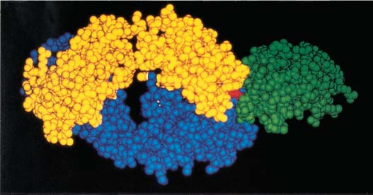
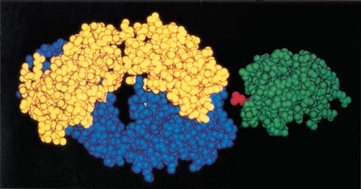
El sistema inmunológico: Defensa interna 979
su sangre. Luego, Cesar Milstein y Georges Kohler en el Laboratory of Molecular Biology en Cambridge, Inglaterra, desarrollaron anticuerpos monoclonales , anticuerpos idénticos producidos por células clonadas a partir de una única célula. Una manera de producir anticuerpos monoclonales en el laboratorio consiste en inyectar a ratones el antígeno de interés; por ejemplo, un antígeno de una bacteria particular. Después que los ratones han producido anticuerpos para el antígeno, se colectan sus células de plasma. No obstante, estas células de plasma normales sobreviven en cultivo durante sólo unas cuantas generaciones, limitando la cantidad de anticuerpo que es posible producir. Por el contrario, las células cancerosas viven y se dividen en cultivo de tejidos de manera indefi nida. Las células B pueden estar suspendidas en un medio de cultivo junto con células del linfoma de otros ratones. (El linfoma es un cáncer de los linfocitos). Luego, las células B y las células del linfoma son inducidas a unirse. Forman células híbridas, conocidas como hibridomas , que tienen propiedades de las dos células “madre”. Los hibridomas pueden cultivarse indefi nidamente (una propiedad de las células cancerosas) y continuar secretando anticuerpos (una propiedad de las células B). Los investigadores seleccionan células híbridas que están produciendo el anticuerpo necesario y luego las vuelven a clonar en un cultivo celular por separado. Las células de este clon secretan grandes cantidades del anticuerpo particular; de ahí el nombre anticuerpos monoclonales . Cada tipo de anticuerpo monoclonal es específi co para un determinante antigénico único. Los inmunólogos también usan tecnología de ADN recombinante para producir anticuerpos monoclonales. Debido a su pureza y especifi cidad, los anticuerpos monoclonales han demostrado ser herramientas invaluables en la biología moderna. Por ejemplo, un investigador podría estar interesado en detectar una molécula específi ca presente en cantidades muy pequeñas en una mezcla. La reacción de esa molécula (el antígeno) con un anticuerpo monoclonal específi co revela su presencia. Los anticuerpos monoclonales se usan de manera semejante en varias pruebas de diagnóstico. Las pruebas de embarazo caseras usan un anticuerpo monoclonal que es específi co para la gonadotropina coriónica (hCG) humana, una hormona producida por un embrión humano en desarrollo (vea los capítulos 50 y 51). Varios anticuerpos monoclonales están siendo utilizados clínicamente para el tratamiento de cáncer. El fármaco Herceptina es un anticuerpo monoclonal que se usa en el tratamiento de una forma de cáncer de mama.
La memoria inmunológica es responsable de la inmunidad a largo plazo
La memoria inmunológica depende de las células B de memoria y de las células T de memoria. A continuación de una respuesta inmunológica, las células T de memoria se agrupan estratégicamente en muchos tejidos no linfáticos, incluyendo los pulmones, el hígado, los riñones y los intestinos. Muchas infecciones ocurren en estos sitios, y las células T estacionadas ahí pueden responder de manera expedita. En respuesta al antígeno, las células T de memoria rápidamente se convierten en células T C y producen sustancias que matan a las células invasoras. Las células B de memoria tienen un “gen de supervivencia” que impide la apoptosis, la muerte celular programada que es el destino fi nal de las células de plasma. Las células B de memoria continúan viviendo y producen pequeñas cantidades de anticuerpo mucho después que el cuerpo ha superado la infección. Este anticuerpo circulante es una parte del arsenal de armas químicas con que cuenta el cuerpo. Si el mismo patógeno vuelve a entrar al cuerpo, el anticuerpo de inmediato lo convierte en un objetivo para su destrucción. Al mismo tiempo, células de
ese antígeno. (Jerne y Burnet fueron galardonados con el Premio Nobel en Fisiología o Medicina por su obra en inmunología). Cuando un antígeno se une con un receptor coincidente sobre un linfocito, activa al linfocito, que a continuación origina un clon de células con receptores idénticos. Un problema con esta hipótesis cuando fue presentada inicialmente fue su sugestión de que nuestras células deben contener millones de genes de anticuerpos separados, donde cada uno codifi ca un anticuerpo con especifi cidad diferente. Aunque cada célula humana tiene una gran cantidad de ADN, no es sufi ciente para proporcionar un gen diferente que codifi que cada una de los millones de molécu las anticuerpo específi cas posibles. Una explicación de cómo el sistema inmunológico podría tener tantas especifi cidades diferentes llegó después. En 1965, W. J. Dreyer del Institute of Biochemistry en la Universidad de Zurich, Suiza, y Joe Claude Bennett de la Universidad de Alabama en Birmingham sugirieron que la región C y la región V de una inmunoglobulina están codifi cadas por dos genes por separado. Al principio, su hipótesis fue rechazada por muchos biólogos porque contradecía la hipótesis imperante de que un gen codifi ca sólo un polipéptido. No se disponía entonces de la tecnología necesaria para probar la hipótesis de Dreyer y Bennett , y no fue sino hasta 1976 cuando Susumu Tonegawa del Massachusett s Institute of Technology y sus colegas demostraron que genes por separado codifi can las regiones C y V de las inmoglobulinas. Tonegawa también demostró que tres familias de genes por separado codifi can inmoglobulinas y que cada familia de genes contenía un gran número de segmentos de ADN que codifi can regiones V. La recombinación de estos segmentos de ADN durante la diferenciación de las células B es responsable de la diversidad de los anticuerpos. Tonegawa obtuvo el Premio Nobel de Fisiología o Medicina en 1987 por su trabajo, que transformó la ciencia emergente de la inmunología. Ahora comprendemos que en células B no diferenciadas, segmentos de genes están presentes para un número de varias regiones V, para una o más regiones de unión (J), y para una o más regiones diferentes C ( FI-
GURA 45-11 ). El reordenamiento de estos segmentos de ADN produce una enorme cantidad de combinaciones potenciales. Se producen millones de tipos diferentes de células B (y T). Por casualidad, una de estas células B puede producir justo el anticuerpo correcto para destruir un patógeno que invada el cuerpo. Para apreciar la capacidad de la diversidad de los anticuerpos, considere las diversas combinaciones de objetos que usted crea en su vida diaria. Un ejemplo conocido es elaborar una copa de helado. Imagine las diversas combinaciones que son posibles si usa 10 sabores de helado, 6 tipos de salsa y 15 tipos de betún. Los investigadores han identifi cado fuentes adicionales de diversidad de anticuerpos. Por ejemplo, el ADN de las células B maduras que codifi ca las regiones de inmunoglobulinas muta muy fácilmente. Estas mutaciones somáticas producen genes que codifi can anticuerpos ligeramente diferentes. Aquí hemos usado la diversidad de los anticuerpos como ejemplo, aunque mecanismos genéticos semejantes explican la diversidad de los receptores de células T. Aunque en realidad podríamos usar sólo unos relativamente pocos tipos de anticuerpos o células T en toda una vida, la extraordinaria diversidad del sistema inmunológico lo prepara para atacar a la mayoría de los antígenos potencialmente dañinos que pueden invadir el cuerpo.
Los anticuerpos monoclonales son altamente específi cos
Antes de 1975, el único método para obtener anticuerpos para fi nes médicos o de investigación consistía en inmunizar animales y colectar
980 Capítulo 45
por varios días hasta que llega a un máximo ( FIGURA 45-12 ). El principal anticuerpo sintetizado durante la respuesta inmune primaria es la IgM. Por último, hay una fase de declinación , durante la cual la concentración de anticuerpos decrece hasta un nivel muy bajo. Una segunda exposición al mismo antígeno, inclusive años después, resulta en una respuesta inmune secundaria . Debido a que las células B de memoria que llevan anticuerpos a ese antígeno (y también las células T de memoria con sus receptores específi cos de células T) persisten por tantos años, la respuesta inmune secundaria es mucho más rápida que la respuesta inmune primaria y tiene un período latente más breve. Se requiere mucho menos antígeno para estimular una respuesta inmune secundaria que una respuesta primaria, y se producen más anticuerpos. Además, la afi nidad de los anticuerpos suele ser mucho más alta. El anticuerpo predominante en una respuesta inmune secundaria es la IgG.
memoria específi cas son estimuladas para dividirse, produciendo nuevos clones de células de plasma que elaboran el mismo anticuerpo. La presencia de anticuerpos que circulan se usa clínicamente para detectar exposición previa a patógenos específi cos. Por ejemplo, algunas pruebas para detectar VIH miden los anticuerpos al virus que produce el SIDA.
Una respuesta inmune secundaria es más efi caz que una respuesta primaria
La primera exposición a un antígeno estimula una respuesta inmune primaria . Una infección, o un antígeno inyectado en un animal, provoca la aparición de anticuerpos específi cos en el plasma sanguíneo en un lapso de 3 a 14 días. Luego de la inyección de antígeno, hay un breve período latente durante el cual el antígeno es reconocido y linfocitos idóneos empiezan a formar clones. Luego sigue una fase logarítmica , durante la cual la concentración de anticuerpos asciende rápidamente
V1 V2 V3 V4
ADN de la célula madre
J1 J2 J3 Intrón C
Reordenamiento de genes
V1 V2 V3 J3 Intrón C
V3 J3 Intrón C
ADN de la célula B
Transcripción
Traducción
Gen funcional
Transcripción del ADN 5 ′
5 ′
3 ′
V3 J3 C
3 ′
Empalme del ARN
Polipéptido
Región variable Región constante
Molécula anticuerpo
FIGURA 45-11 Animada Diversidad de los anticuerpos En células no diferenciadas, segmentos de genes están presentes para varias regiones variables (V) diferentes, para una o más regiones de unión (J), y para una o más regiones constantes (C) diferentes. Durante la diferenciación, estos segmentos de ADN se reordenan. Un segmento de genes que se extiende desde el extremo de un segmento V hasta el inicio de un segmento J puede ser eliminado, produciendo así un gen que puede ser transcrito. La transcripción de ARN es procesada para eliminar intrones, y el ARNm es traducido. Así es como se produce cada una de las cadenas de polipéptidos de una molécula anticuerpo.
El sistema inmunológico: Defensa interna 981
bio leve puede impedir el reconocimiento por las células de memoria. Debido a que el sistema inmunológico es tan específi co, cada antígeno diferente es tratado por el cuerpo como un nuevo desafío inmunológico.
La inmunización induce inmunidad activa
Hemos estado considerando la inmunidad activa , que se desarrolla a continuación de la exposición a antígenos. La inmunidad activa puede inducirse de manera natural o artifi cial ( TABLA 45-1 ). Si alguien con sarampión estornuda cerca de otra persona y ésta contrae la enfermedad, desarrolla inmunidad activa de manera natural. La inmunidad activa también puede inducirse artifi cialmente por inmunización ; es decir, por la exposición a antígenos en una vacuna . Cuando una vacuna efi caz es introducida al cuerpo, el sistema inmunológico desarrolla de manera activa clones de células, produce anticuerpos y desarrolla células de memoria. La primera vacuna fue preparada en 1796 por el médico británico Edward Jenner contra la vaccinia, el virus de la viruela vacuna. (El término vacunación proviene del nombre de este virus bovino). La vacuna de Jenner proporcionó a los humanos inmunidad contra la enfermedad mortal viruela, que semeja bastante a la viruela vacuna. Jenner no tenía conocimientos sobre microorganismos o inmunología, y pasaron 100 años antes que el químico francés Louis Pasteur comenzara a desarrollar métodos científi cos para preparar vacunas. Pasteur demostró que inoculaciones con preparaciones de patógenos atenuados (debilitados) podían utilizarse para desarrollar inmunidad contra la forma virulenta (infecciosa) del patógeno. Sin embargo, no fue sino hasta que en el siglo XX hubo avances en inmunología; por ejemplo, la teoría de selección clonal de Burnet en 1957 y el descubrimiento de las células T y las células B en 1965, que los científi cos adquirieron una comprensión moderna de las vacunas. La vacunación efi caz estimula que el cuerpo lance una respuesta inmunológica contra los antígenos contenidos en la vacuna. Se desarrollan células de memoria, y encuentros futuros con el mismo patógeno son tratados rápidamente. Los microbiólogos preparan vacunas efi caces de varias maneras. Pueden atenuar un patógeno de forma que pierda su capacidad de provocar enfermedades. Cuando los patógenos son cultivados durante largos períodos en células no humanas, los patógenos se adaptan al huésped no humano por medio de mutaciones, de modo que dejan de ocasionar enfermedad en los humanos. Este método se usa para producir las vacunas Sabin contra la poliomielitis, el sarampión, las paperas y la rubéola. Las vacunas contra el tétanos y la dift eria se elaboran a partir de toxinas secretadas por los patógenos respectivos. La toxina es modifi cada de manera que ya no pueda destruir tejidos y aun así sus determinantes antigénicos permanezcan intactos. Los investigadores están desarrollando vacunas de ADN (o vacunas de ARN) con base en una parte del material genético patógeno. El ADN
La habilidad del cuerpo para lanzar una respuesta inmunológica rápida y efi caz durante un segundo encuentro con un antígeno explica por qué normalmente no adquirimos la misma enfermedad infecciosa varias veces. Por ejemplo, es poco probable que una persona que contrae sarampión o varicela vuelva a infectarse en el futuro. Cuando alguien está expuesto por segunda ocasión, el sistema inmunológico responde rápidamente, destruyendo los patógenos antes que tengan tiempo para multiplicarse o provocar síntomas de la enfermedad. Las inyecciones de refuerzo se administran para obtener una respuesta inmune secundaria, reforzando así la memoria inmunológica. Tal vez el lector se pregunte cómo una persona puede adquirir infl uenza (gripe) o resfriarse más de una vez. La razón es que hay muchas variedades de estas enfermedades virales, cada una provocada por un virus con antígenos ligeramente diferentes. Por ejemplo, más de 100 virus diferentes provocan el resfriado común, y nuevas variedades de virus de resfrío y gripe evolucionan continuamente por mutación (un mecanismo de supervivencia para ellos). A medida que los virus evolucionan, pueden ocurrir cambios en sus antígenos superfi ciales. Inclusive un cam-
FIGURA 45-12 Animada Memoria inmunológica El antígeno 1 fue inyectado el día 0; y la respuesta inmunológica fue valorada al medir los niveles de anticuerpos específi cos para el antígeno 1. En la semana 4, la respuesta inmune primaria ya había bajado. El antígeno 1 fue inyectado de nuevo, junto con una nueva proteína, el antígeno 2. La respuesta inmune secundaria fue más grande y rápida que la respuesta primaria. También era específi ca al antígeno 1. En respuesta al recién encontrado antígeno 2 se presentó una respuesta inmune primaria.
Tiempo (semanas)
1 0 0
2 3 4 5 6 7 8
10 1
10 2
10 3
10 4
Inyección del antígeno 1 Inyección de los antígenos 1 y 2
Concentración de anticuerpos (unidades arbitrarias)
Anticuerpos específicos para el antígeno 1: respuesta primaria Anticuerpos específicos para el antígeno 1: respuesta secundaria Anticuerpos específicos para el antígeno 2: respuesta primaria
Inmunidad activa y pasiva
Desarrollo de las Duración de Tipo de inmunidad Cuándo se desarrolla células de memoria la inmunidad
Activa
Inducida naturalmente Después que los patógenos entran al cuerpo a través de encuentros naturales Sí Muchos años (p. ej., cuando una persona con sarampión estornuda cerca de otra persona)
Inducida artifi cialmente Después de inmunización con una vacuna Sí Muchos años
Pasiva
Inducida naturalmente Después que la madre transfi ere anticuerpos al bebé en gestación No Pocos meses
Inducida artifi cialmente Después de una inyección de gammaglobulina No Pocos meses
TABLA 45-1
982 Capítulo 45
perjudicar la función inmunológica, incluyendo mutaciones genéticas, desnutrición, privación del sueño, enfermedades preexistentes, estrés y patógenos virulentos. Las respuestas inmunológicas inefi caces o dirigidas incorrectamente también pueden resultar en estados de enfermedad. Las respuestas inmunológicas exageradas, dañinas, se conocen como hipersensibilidad . Por ejemplo, algunas veces el sistema inmunológico funciona mal y ataca sus propios tejidos, provocando enfermedad autoinmune. En las reacciones alérgicas, las personas son más sensibles a antígenos ambientales leves. La capacidad del sistema inmunológico para distinguir lo propio de lo ajeno algunas veces interfi ere con las intervenciones clínicas. Los médicos deben considerar cuidadosamente las respuestas del sistema inmunológico cuando aplican procedimientos para salvar vidas como transfusiones sanguíneas o trasplantes de órganos.
Las células cancerosas evaden al sistema inmunológico
El cáncer es la causa principal de muerte en todo el mundo y la segunda en países occidentales. Se ha estimado que una de cada tres personas en Estados Unidos padecerá cáncer, y que una de cada cinco morirá a causa del cáncer. Mundialmente, el cáncer de pulmón en hombres y el cáncer de mama en mujeres son los tipos de cáncer más importantes que resultan en muerte. (En el análisis previo sobre el cáncer en los capítulos 17 y 39, explicamos que el cáncer es realmente un complejo grupo de enfermedades caracterizadas por la desregulación de mecanismos de control normales para el crecimiento celular). Aquí nos enfocamos en la interacción entre las células cancerosas y las células del sistema inmunológico, así como en nuevas estrategias de tratamiento basadas en mecanismos inmunológicos. Las células cancerosas son células del cuerpo que han sido transformadas de manera que se modifi can sus mecanismos normales de regulación del crecimiento. Cada día, unas cuantas células normales pueden ser transformadas en células precancerosas en cada uno de nosotros en respuesta a los rayos solares UV, los rayos X, ciertos virus, fumar tabaco, amianto y otros agentes cancerígenos en el medio ambiente, así como por otros factores desconocidos. ¿Cómo responde el sistema inmunológico? Y, ¿por qué algunas veces la respuesta inmunológica es inefi caz? Los antígenos de células cancerosas están clasifi cados según su estructura molecular y su fuente. Algunos antígenos de células cancerosas son producidos por genes mutantes que están asociados con células cancerosas. Las células T pueden responder a ellos porque estos antígenos no se encuentran en células normales. Otros antígenos de células cancerosas son proteínas normales que pueden estimular respuestas inmunológicas porque están expresadas en cantidades anormalmente grandes. El virus del papiloma humano (VPH) que ha sido vinculado con cáncer cervicouterino, produce antígenos que estimulan a las células T a responder. Algunas veces, respuestas inmunológicas específi cas previenen el desarrollo de tales tipos de cáncer por daños en el ADN inducidos por virus.
Los antígenos de las células cancerosas inducen inmunidad mediada por células e inmunidad mediada por anticuerpos
Las células NK y los macrófagos destruyen células cancerosas. Los macrófagos producen citocinas, incluyendo FNT que inhibe el crecimiento de tumores. Las células dendríticas presentan antígenos a las células T, estimulándolas a producir interferonas, que poseen un efecto antitumoral. Las células T C atacan a las células cancerosas directamente y también producen interleucinas, que atraen y activan macrófagos y células NK ( FIGURA 45-13 ). Aunque el sistema inmunológico reconoce muchos antígenos de las células cancerosas, estos antígenos a menudo estimulan sólo respuestas inmunológicas débiles que no son efi caces.
del patógeno es modifi cado de modo que transfi ere genes que especifi can antígenos. Cuando el ADN modifi cado es inyectado a un paciente, es tomado por células y se abre camino al núcleo. Son manufacturados los antígenos codifi cados, que estimulan tanto la inmunidad mediada por células como la inmunidad mediada por anticuerpos. Varias vacunas de ADN, incluyendo vacunas para prevenir y tratar la infección por VIH, están en ensayos clínicos.
La inmunidad pasiva es inmunidad prestada
Para proporcionar inmunidad pasiva , los médicos inyectan a las personas con anticuerpos producidos activamente por otro organismo. El suero o la gammaglobulina que contienen estos anticuerpos se obtienen de humanos u otros animales. Los sueros no humanos son menos aconsejables porque las proteínas no humanas pueden actuar como antígenos, estimulando una respuesta inmunológica que puede resultar en enfermedad del suero. La inmunidad pasiva es inmunidad prestada. Sus efectos son temporales, sin importar que la inmunidad sea inducida artifi cial o naturalmente (vea la tabla 45-1). Los médicos usan inmunidad pasiva inducida artifi cialmente para impulsar las defensas de cuerpo temporalmente en contra de una enfermedad particular. Por ejemplo, alguna persona se expone a hepatitis A, una forma de hepatitis viral que se difunde a través de alimentos o agua contaminados, una persona en riesgo de contraer la infección puede ser inyectada con gammaglobulina que contenga anticuerpos para el patógeno de la hepatitis. No obstante, las inyecciones de gammaglobulina ofrecen protección sólo por unas cuantas semanas. Debido a que el cuerpo no ha lanzado activamente una respuesta inmunológica, no tiene células de memoria y no puede producir anticuerpos para el patógeno. Una vez que los anticuerpos inyectados se descomponen, la inmunidad desaparece. Las mujeres embarazadas confi eren inmunidad pasiva inducida naturalmente a sus bebés en gestación al desarrollar anticuerpos para ellos. Estos anticuerpos maternos de la clase IgG, pasan a través de la placenta y proporcionan al feto y al recién nacido un sistema de defensa hasta que sus propios sistemas inmunológicos maduran. Los bebés que son amamantados con leche materna continúan recibiendo inmunoglobulinas, particularmente IgA, en su leche, durante los meses críticos cuando su propio sistema inmunológico está en desarrollo.
Repaso
■ ¿Cómo reconocen los antígenos a los anticuerpos?
■ ¿Cuáles son tres formas en que los complejos antígeno-anticuerpo afectan a los patógenos?
■ ¿Cuál es la base de la memoria inmunológica?
■ ¿Cuál es la diferencia entre la inmunidad pasiva y la inmunidad activa?
45.6 RESPUESTA A LA ENFERMEDAD, INSUFICIENCIA INMUNOLÓGICA Y REACCIONES DAÑINAS
OBJETIVOS DE APRENDIZAJE
11 Describir la respuesta del cuerpo a las células cancerosas y al VIH. 12 Describir ejemplos de hipersensibilidad, incluyendo enfermedades autoinmunes, incompatibilidad del Rh, y reacciones alérgicas, y resumir las bases inmunológicas del rechazo de injertos.
El sistema inmunológico suele ser muy efi caz en la defensa del cuerpo en contra de patógenos invasores. No obstante, muchos factores pueden
El sistema inmunológico: Defensa interna 983
difi eren de las vacunas tradicionales en que se usan para destruir patógenos antes que éstos provoquen la enfermedad. Las vacunas de ADN están elaboradas con pequeñas cantidades de ADN de las células cancerosas de un paciente. Una vez que la vacuna se aplica a un paciente, estimula un incremento en la producción de antígeno. En respuesta, el sistema inmunológico del paciente produce más células T. Los investigadores están elaborando vacunas de células dendríticas al tomar células dendríticas de un paciente con cáncer y exponerlas a antígenos de las células cancerosas de éste. Esta combinación de células dendríticas y antígenos es inyectada más tarde al paciente. Las células dendríticas muestran los antígenos a las células T C , que luego atacan a las células cancerosas. Otro método que recientemente ha mostrado ser promisorio es el desarrollo de medicamentos que desactivan las proteínas que activan vías de señalización clave. Los protocolos para un tratamiento efi caz contra el cáncer con toda seguridad utilizarán un método de sistemas y combinaciones de medicamentos. Los mecanismos celulares son complicados, y cuando un medicamento bloquea una vía de señalización, las células cancerosas pueden actuar alrededor de la reacción bloqueada o aprovechar alguna vía redundante. Cuando se usan combinaciones de medicamentos, más de una vía de señalización, o diferentes partes de la misma vía, puede ser objetivo.
La enfermedad por inmunodefi ciencia puede ser hereditaria o adquirida
La ausencia o el fallo de un componente del sistema inmunológico puede resultar en la enfermedad por inmunodefi ciencia , una condición que aumenta la sensibilidad a la infección. Las inmunodefi ciencias hereditarias tienen una incidencia estimada de 1 por cada 10,000 nacimientos. Los síndromes de inmunodefi ciencia combinada severa ( IDCS ) están ligados al cromosoma X y son afecciones recesivas y autosómicas que afectan profundamente tanto a la inmunidad mediada por células como a la inmunidad mediada por anticuerpos, resultando en infecciones múltiples.
Algunas veces las células cancerosas evaden el sistema inmunológico y se multiplican sin control. Algunos tipos de células cancerosas pueden bloquear a las células T C . Otras disminuyen notablemente su expresión de moléculas CHM clase I. Recuerde que las células T C reconocen sólo antígenos asociados con CHM clase I, de modo que un bajo nivel de estas células evita la destrucción de tumores. Algunas células cancerosas no producen las moléculas coestimuladoras necesarias para activar a las células T C.
El tratamiento de cáncer en el futuro va a ser más específi co
Los tratamientos convencionales de cáncer, como quimioterapia y radioterapia, están diseñados para matar células que se dividen rápidamente. No obstante, estos tratamientos destruyen células normales, así como células cancerosas. Para tratar efi cazmente al cáncer, las estrategias del tratamiento deben ser más específi cas, o incluso adecuadas al cáncer particular. Por ejemplo, los investigadores en oncología están manipulando genéticamente las células cancerosas para secretar citocinas que podrían estimular la respuesta inmunológica del paciente. Algunos fármacos oncológicos, como la herceptina, son anticuerpos monoclonales. La herceptina se une con un receptor del factor del crecimiento que está presente en cantidades excesivas sobre las células de alrededor de 30% de cáncer de mama metastásicos. La herceptina bloquea los factores del crecimiento que podrían estimular la proliferación de las células. La proliferación del cáncer suele depender del desarrollo de vasos sanguíneos que llevan nutrientes y oxígeno al tumor. Los inhibidores de la angiogénesis aminoran el desarrollo de los vasos sanguíneos, disminuyendo así la proliferación del cáncer. Muchos estudios en marcha están intentando optimizar los benefi cios clínicos de estos medicamentos. Los investigadores están desarrollando vacunas contra el cáncer que contienen células cancerosas o antígenos tumorales; las vacunas estimulan el sistema inmunológico del paciente para que lance respuestas mediadas por células a antígenos asociados con tumores. Estas vacunas
10 μ m
Un ejército de células T C rodea una gran célula cancerosa. Las células T C reconocen la célula cancerosa porque muestra antígenos modificados o únicos sobre su superficie.
Lennart Nilsson, Boehringer Ingelheim International GmbH
FIGURA 45-13 Destrucción de células cancerosas Esta serie de SEM a color muestra células T C ( verde ) atacando y destruyendo una célula cancerosa ( amarillo ).
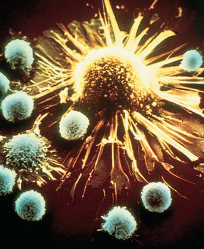
984 Capítulo 45
en hombres. El contacto sexual con personas que padecen VIH es un factor de riesgo que puede ser modifi cado. El uso de un condón de látex durante las relaciones sexuales proporciona protección contra la transmisión del VIH, y el uso de espermicidas que contienen nonoxinol 9 puede proporcionar protección adicional. Hasta una tercera parte de las mujeres embarazadas infectadas con VIH que no están en tratamiento transmitirán el virus a sus bebés durante el embarazo, el nacimiento del bebé o al amamantarlos. Los protocolos recientes para el tratamiento de drogas han reducido la tasa de transmisión de VIH entre la madre y el feto. En países altamente desarrollados, procedimientos efi caces de control de sangre ahora salvaguardan suministros de los bancos de sangre, reduciendo notablemente el riesgo de infección por transfusión de sangre.
El VIH destruye el sistema inmunológico del huésped
El VIH suele entrar al cuerpo a través de la mucosa que reviste las vías. Una proteína sobre la envoltura externa del virus se une a CD4 sobre la superfi cie de células T A , que son el objetivo principal ( FIGURA 45-14 ; vea también la fotografía al inicio del capítulo 23). El virus también se une a un correceptor que normalmente se une con una quimioquina. El VIH entra en la célula T A y es transcrito a la inversa para formar ADN. Luego, su ADN es incorporado en el genoma huésped. El virus se reproduce a sí mismo provocando la muerte de la célula huésped. La primera fase de la infección del VIH es la fase aguda de la infección. En menos de dos semanas de infección, grandes cantidades de células T A y células B de memoria son destruidas. El VIH también infecta células dendríticas y macrófagos. Las células dendríticas en las membranas mucosas transportan VIH desde su punto de entrada hasta los nodos linfáticos. El virus se difunde aún más a través de la sangre. El cuerpo lanza una respuesta inmunológica a continuación de la infección de VIH. Las respuestas no específi cas incluyen la producción de péptidos antimicrobianos y acción por células NK, células dendríticas y el sistema del complemento. Las respuestas inmunológicas específi cas incluyen la activación y movilización de células T A . Se estima que 25% de personas infectadas por VIH en Estados Unidos ignora que están infectadas. Muchas personas experimentan síntomas leves parecidos a la gripe (fi ebre, dolor de cabeza, dolor de garganta, infl amación de los ganglios linfáticos, dolor muscular) alrededor de dos semanas después de contraer el virus. No obstante, algunas personas no tienen síntomas. La fase aguda cambia hacia el período latente, una fase crónica, a medida que el sistema inmunológico disminuye el VIH en la sangre. Algunas células infectadas por VIH no son destruidas, y el virus puede continuar replicándose lentamente durante muchos años. Parece que las células T C son las células principales que atacan el VIH, limitando la replicación viral y postergando el avance de la enfermedad. No obstante, con el tiempo el VIH continúa destruyendo células T A , resultando en un decremento notable en la población de estas células. Esta disminución perjudica severamente la capacidad del cuerpo para resistir infecciones porque ya no quedan células T A para liberar las citocinas necesarias para activar las células T C y las células B. Al cabo de un tiempo, ocurre un avance de los síntomas, incluyendo la infl amación de los ganglios linfáticos, sudores nocturnos y pérdida de peso ( FIGURA 45-15 ). Muy a menudo, el virus termina por ganar la batalla. En la mayoría de las personas infectadas por VIH, la enfermedad termina por avanzar a SIDA, la etapa fi nal, y a menudo letal. Este proceso puede llevar más de 10 años, y los fármacos retrovirales aminoran el proceso. Para cuando la enfermedad avanza a SIDA, el tejido linfático ha sido destruido y la cantidad de células T A en la sangre ha disminuido por debajo de un nivel crítico de 200 células/ m L. Como una consecuencia
Los bebés que nacen con IDCS suelen fallecer alrededor de los dos años de edad, a menos que sean mantenidos en una burbuja protectora hasta que pueden ser tratados efi cazmente, por lo general mediante trasplantes de médula ósea. En el síndrome de DiGeorge , el timo está reducido o ausente y el paciente tiene défi cit de células T. Los niños nacidos con este trastorno son propensos a graves infecciones virales. El tratamiento implica el trasplante de médula ósea o tejido del timo fetal. Otros tejidos pueden asumir la producción de células T, y el funcionamiento suele mejorar alrededor de los cinco años de edad. Los investigadores usan varios modelos animales para estudiar la inmunodefi ciencia. Por ejemplo, el ratón desnudo (un ratón mutante sin pelo) no desarrolla un timo funcional. Debido a que los ratones desnudos son defi cientes en células T maduras, se usan para estudiar los efectos de inmunidad mediada por células comprometida, así como tratamientos posibles. La investigación con células madre y avances en ingeniería genética sugieren nuevos métodos para tratar la inmunodefi ciencia (vea los capítulos 16 y 17). En todo el mundo, la causa más importante de inmunodefi ciencia adquirida en niños es desnutrición de proteínas. La falta de proteínas disminuye la cantidad de células T y la habilidad de elaborar anticuerpos, lo que perjudica al sistema inmunológico. Esta condición incrementa el riesgo de contraer infecciones oportunistas , infecciones debidas a microbios que no suelen provocar enfermedades. Otra causa importante de inmunodefi ciencia adquirida es la quimioterapia administrada a pacientes con cáncer porque la quimioterapia es más dañina para las células que se dividen rápidamente, incluyendo las células madre de la sangre y linfocitos activados.
El VIH es la causa más importante de inmunodefi ciencia adquirida en adultos
El virus de inmunodefi ciencia humana (VIH) fue aislado por primera vez en 1983 y en 1984 se demostró que es la causa del síndrome de inmunodefi ciencia adquirida (SIDA) . El VIH, que es un retrovirus, es el que más se ha estudiado. (Recuerde por el capítulo 24 que un retrovirus es un virus de ARN que usa su ARN como modelo para hacer ADN con ayuda de transcriptasa inversa). Se conocen varias cepas diferentes del virus; en humanos, la forma más virulenta es el VIH-1. La pandemia del SIDA ha cobrado más de 30 millones de vidas. El VIH mata más de 2 millones de personas cada año, lo cual lo hace la sexta causa más alta de muerte mundial. Los epidemiólogos estiman que más de 33 millones de personas, incluyendo más de 2 millones de niños, en todo el mundo, están infectados de VIH en la actualidad. Cada año, más de 2.7 millones de personas se infectan con VIH. La Asamblea General de la Organización de las Naciones Unidas ha califi cado al SIDA como una “emergencia mundial” y ha descrito medidas para movilizar recursos mundiales para combatir la enfermedad. El VIH/SIDA es más que una cuestión médica; es una amenaza política, económica y a los derechos humanos. El VIH se transmite principalmente cuando se tienen relaciones sexuales con una persona infectada o por exposición directa a sangre o productos sanguíneos infectados. El hecho de compartir agujas y/o jeringas (por lo general para inyección de droga) con una persona infectada constituye un factor de riesgo primordial. El virus no se difunde por contacto casual. La gente no contrae VIH por abrazarse, besarse casualmente o usar las mismas instalaciones sanitarias. Los miembros y los amigos de la familia que tienen contacto con pacientes con SIDA no tienen más probabilidad de ser infectados. En Estados Unidos, más de 50,000 nuevas infecciones de VIH ocurren cada año. De estas nuevas infecciones, alrededor de 75% ocurren
El sistema inmunológico: Defensa interna 985
En alrededor de la tercera parte de los pacientes infectados con SIDA, el virus infecta el sistema nervioso y provoca el complejo de demencia del SIDA . Estos pacientes presentan progresiva disfunción cognitiva, motora y conductual que suele terminar en estado de coma y muerte.
Los investigadores están en búsqueda de tratamientos efi caces
Los investigadores de todo el mundo están en busca de medicamentos que combatan exitosamente el virus del SIDA. Debido a que el VIH a
de esta inmunosupresión, muchos pacientes con SIDA desarrollan infecciones oportunistas severas, como tuberculosis, o formas raras de cáncer, como el sarcoma de Kaposi (un tumor en las células endoteliales que revisten los vasos sanguíneos y ocasiona puntos morados sobre la piel).
300 nm
- VIH ( partículas azules ) atacando células T A ( verde claro ).
Lennart Nilsson, Boehringer Ingelheim International GmbH
100 nm
- VIH ( azul morado ) en ciernes desde los extremos de las microvellosidades de una célula T A .
Lennart Nilsson, Boehringer Ingelheim International GmbH
FIGURA 45-14 Micrografía a color de VIH infectando sus células auxiliares La infección de VIH agota los linfocitos T A . Ésta es la razón más importante del fracaso del sistema inmunológico en el SIDA.
Exposición a semen o sangre que contiene VIH
Factores psicológicos
Ciertas enfermedades de transmisión sexual Nivel de la función inmune
Otros factores ambientales
Factores genéticos
Función inmune severamente deprimida
Inflamación de los ganglios linfáticos, sudores nocturnos, fiebre, pérdida de peso
Complejo de demencia del SIDA
Período latente
Avance de los síntomas SIDA
Death
Infecciones oportunistas
Muerte Muerte
No hay infección Infección por VIH; fase aguda
FIGURA 45-15 Animada El curso de la infección por SIDA La exposición a semen o sangre que contiene VIH puede conducir a infección por SIDA. La infección aguda (temprana) empieza en los nodos linfáticos y otros tejidos linfáticos asociados con revestimientos epiteliales. La mayoría de las células T A puede ser destruida en menos de dos semanas de infección. Durante el período latente, se desarrolla una infección crónica y el virus se replica a bajo nivel. Finalmente, la replicación viral puede aumentar y conducir a un avance de los síntomas y a SIDA, la etapa fi nal y a menudo letal. Aunque algunas personas expuestas aparentemente no son infectadas, el riesgo aumenta con exposiciones múltiples. Muchos factores determinan si una persona expuesta a VIH desarrollará SIDA.
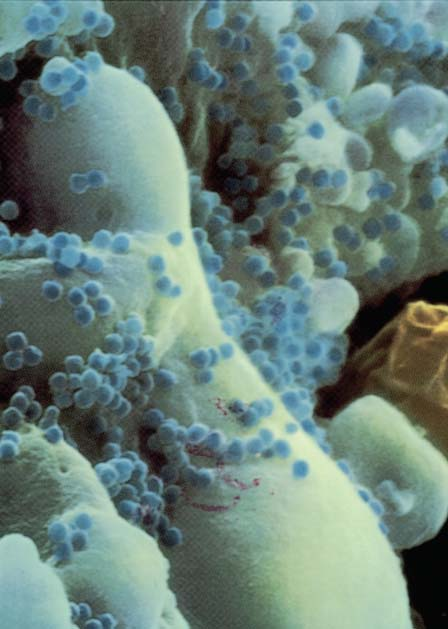
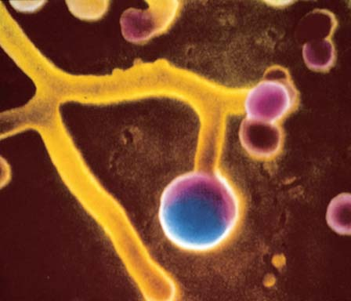
986 Capítulo 45
tienen el potencial de ser autorreactivos ; es decir, de lanzar una respuesta inmunológica contra tejidos propios. En alrededor de 5% de los adultos en países altamente desarrollados, esta autorreactividad puede conducir a la formación de una hipersensibilidad conocida como autoinmunidad , o enfermedad autoinmune , donde células inmunes reaccionan contra las células del propio cuerpo. Algunas de las enfermedades que resultan de esta defi ciencia en la auto-tolerancia son artritis reumatoide, lupus eritematoso sistémico (LES), diabetes insulino-dependiente, diabetes, esclerodermia y esclerosis múltiple. En enfermedades autoinmunes, los anticuerpos y las células T atacan los tejidos del propio cuerpo. En artritis reumatoide , las células T en el área de infl amación producen una citocina que promueve la infl amación. Además, los anticuerpos de una proteína conjunta pueden generar complejos antígeno-anticuerpo que son depositados en las pequeñas uniones. En la esclerosis múltiple , una enfermedad autoinmune del sistema nervioso central, las células T H atacan autoantígenos de la mielina. Imágenes de resonancia magnética muestran la pérdida de capas de mielina en múltiples áreas alrededor de axones en el cerebro y la médula espinal que suelen estar mielinizadas. Se forma tejido de la cicatriz, que compromete la habilidad de estas neuronas dañadas para transmitir señales. Múltiples genes, incluyendo genes del CHM, contribuyen al desarrollo de la enfermedad autoinmune. Las mutaciones que causan apoptosis anormal o la limpieza de células muertas pueden resultar en señales de peligro que activan el sistema inmunológico. Otro factor importante es que la infección viral o bacteriana a menudo precede la aparición de una enfermedad autoinmune. Algunos patógenos han desarrollado una táctica conocida como mimetismo molecular . Engañan al cuerpo al producir moléculas que semejan moléculas propias. Por ejemplo, un adenovirus que ocasiona enfermedades respiratorias e intestinales produce un péptido que imita la proteína mielina. Cuando el cuerpo lanza respuestas al péptido adenovirus, también puede empezar a atacar a la molécula propia semejante, mielina. Para mantener la homeóstasis y la salud, los numerosos tipos de células, las moléculas regulatorias y de señalización, y las complicadas acciones del sistema inmunológico deben ser reguladas con sumo cuidado. Células T y células B específi cas proliferan y responden a desafíos planteados por patógenos, pero después de una respuesta inmunológica efi caz, las poblaciones aumentadas de células T y células B deben reducirse a cantidades normales. Las células que ya no son necesarias mueren por apoptosis. La activación excesiva de componentes críticos puede resultar en infl amación y enfermedades autoinmunes. La baja activación permite que los patógenos provoquen enfermedades graves. Cualquiera de estas dos situaciones puede llevar a la muerte.
La incompatibilidad del Rh puede resultar en hipersensibilidad
Así denominado por los monos Rhesus en cuya sangre fue encontrado por primera vez, el sistema Rh consta de más de 40 tipos de antígenos Rh, cada uno conocido como factor Rh . Por mucho, el más importante de estos factores es el antígeno D . Alrededor de 85% de los residentes en Estados Unidos descendientes de europeos occidentales son Rh positivos: tienen el antígeno D sobre las superfi cies de sus glóbulos rojos (además de los antígenos del sistema ABO y otros antígenos de grupos sanguíneos). Alrededor de 15% de esta población que son Rh negativo no tiene el antígeno D. A diferencia de la situación analizada en el capítulo 11 para los grupos sanguíneos ABO, las personas Rh negativas no producen de manera natural anticuerpos contra el antígeno D (anti-D). No obstante, producen anticuerpos anti-D si son expuestas a sangre con Rh positivo. La codifi cación de los alelos para el antígeno D es dominante sobre el alelo para la ausencia del antígeno. Es por esto que las personas Rh negativas
menudo infecta el sistema nervioso central, un medicamente efi caz debe cruzar la barrera hematoencefálica. La AZT (azidotimidina) , el primer medicamento desarrollado para tratar la infección por VIH, puede prolongar el tiempo previo a la aparición de los síntomas del SIDA. La AZT inhibe la acción de la transcriptasa inversa, la enzima que el retrovirus usa para sintetizar el ADN. Como resultado, la AZT bloquea la replicación del VIH. Sin producir ADN, el virus no es capaz de incorporarse a sí mismo en el ADN de la célula huésped. Desafortunadamente, la transcriptasa inversa que el VIH usa para sintetizar ADN comete muchos errores; alrededor de 1 de cada 2000 nucleótidos que incorpora es incorrecto. Al mutar de esta forma, han evolucionado cepas virales resistentes a la AZT. Inhibidores de la proteasa bloquean la enzima viral proteasa, resultando en copias virales que no pueden infectar nuevas células. Los inhibidores de la proteasa se usan en combinación con la AZT y otros inhibidores de transcriptasa inversa. El tratamiento de triple combinación ha resultado muy efi caz para muchos pacientes con SIDA, evitando infecciones oportunistas y prolongando la vida. De hecho, el tratamiento de combinación ha llevado a una disminución en la incidencia y mortalidad por SIDA en Estados Unidos. Desafortunadamente, gente en muchas partes del mundo no puede sufragar los gastos de estos medicamentos costosos, y en zonas empobrecidas, la epidemia del SIDA continúa creciendo. Además, la aparición de virus resistentes a medicamentos contra el VIH ha sido un grave problema. La contención en todo el mundo de la epidemia del SIDA requerirá una vacuna efi caz que evite la difusión del SIDA. El desarrollo de una vacuna así sigue siendo un desafío de enormes proporciones para los inmunólogos. Se han desarrollado y probado clínicamente más de 50 vacunas, pero ninguna ha sido efi caz. Una vacuna efi caz debería contrarrestar la destrucción por parte del VIH de células clave necesarias para montar una respuesta inmunológica. También, debido a que las mutaciones surgen a tasas muy elevadas, nuevas cepas virales con nuevos antígenos evolucionan rápidamente. Una vacuna no sería efi caz contra nuevos antígenos y podría volverse obsoleta muy pronto. Se ha generado algo de optimismo a causa de una combinación aparentemente efi caz de vacuna y terapia génica que ha sido probada en monos simios. Asimismo, ensayos clínicos recientes con humanos que combinaron dos vacunas produjeron resultados marginalmente positivos. Aunque los inmunólogos trabajan para desarrollar una vacuna exitosa y medicamentos más efi caces para tratar a pacientes infectados, se han utilizado otras estrategias con algo de éxito. Por ejemplo, ahora sabemos que la circuncisión en hombres reduce el riesgo de adquirir infección por VIH a través de contacto sexual. Se han lanzado programas educativos masivos con el objetivo de disminuir la difusión del VIH. Informar al público que tener muchas parejas sexuales sin protección adecuada aumenta el riesgo de contraer VIH y enseñar a personas sexualmente activas la importancia de un “sexo seguro” puede ayudar a contener la pandemia. Se ha sugerido que los servicios de salud pública deben proporcionar condones gratis a quienes son sexualmente activos, así como agujas hipodérmicas estériles a quienes son adictos a drogas intravenosas. El costo de estas medidas sería bastante menor que el costo de cuidados médicos para las cantidades crecientes de pacientes con SIDA y que la cuota en sufrimiento humano.
En una enfermedad autoinmune, el cuerpo ataca sus propios tejidos
La auto-tolerancia , la capacidad de reconocer lo propio, es establecida durante el desarrollo de los linfocitos. Normalmente, los linfocitos no atacan células y tejidos de su propio cuerpo. No obstante, algunos linfocitos
El sistema inmunológico: Defensa interna 987
mino del embarazo a causa de aborto involuntario o de un aborto) con una preparación de anticuerpos D conocida como RhoGAM. Estos anticuerpos limpian los glóbulos rojos de la sangre fetal Rh positiva de la sangre materna muy rápido, minimizando la posibilidad de que sus propios glóbulos blancos se vuelvan sensibles y desarrollen células de memoria. Los anticuerpos también son eliminados rápidamente del cuerpo de la madre. Como resultado, si la mujer vuelve a embarazarse, su sangre no contiene el anti-D que podría dañar el desarrollo del feto.
Las reacciones alérgicas son dirigidas contra antígenos ambientales normales
Alrededor de 20% de la población en Estados Unidos está plagada por algún trastorno alérgico, como asma alérgico o rinitis alérgica. Parece que una predisposición a estos trastornos es hereditaria. En las reacciones alérgicas , la hipersensibilidad resulta en la manufactura de anticuerpos contra antígenos leves, denominados alérgenos , que normalmente no estimulan una respuesta inmunológica. Agentes ambientales comunes, como polen, ácaros del polvo, excrementos de cucarachas y caspa de mascotas, pueden activar reacciones alérgicas en algunas personas. En muchos tipos de reacciones alérgicas se producen inmunoglobulinas IgE distintivas. A continuación analizaremos una reacción alérgica común, la rinitis alérgica , conocida comúnmente como fi ebre del heno. Esta reacción alérgica es activada en algunas personas por inhalar polen ( FIGURA 45-17 ). La exposición al polen ocasiona sensibilización . Los macrófagos degradan el alérgeno y presentan fragmentos de éste a las células T. Luego, las células T activadas estimulan a las células B para convertirse en células de plasma y producir IgE específi co del polen. Estos anticuerpos se unen a receptores en los mastocitos. El extremo Fc de cada molécula IgE se une a un receptor mastocito; su región V es libre para combinarse con el alérgeno del polen. Cuando una persona alérgica sensibilizada inhala el polen microscópico, las moléculas del alérgeno se unen rápidamente con la IgE sobre mastocitos sensibilizados. En respuesta al anticuerpo IgE que se une con el alérgeno, los mastocitos liberan gránulos llenos de histamina y otras moléculas que estimulan la infl amación. Los vasos sanguíneos se dilatan, y los capilares se vuelven más permeables, conduciendo a edema y enrojecimiento. Estas respuestas ocasionan que las fosas nasales se infl amen e irriten. Son comunes secreción nasal, estornudos, ojos llorosos y una sensación general de malestar. Una prolongada respuesta alérgica ocurre cuando los neutrófi los son atraídos por compuestos químicos liberados por los mastocitos. Los neutrófi los migran hacia el área infl amada y liberan compuestos que prolongan la reacción alérgica. Cuando hay asma alérgico , en los bronquiolos de los pulmones se
son homocigóticos recesivos, y las personas Rh positivas son heterocigotos u homocigotos dominantes. A pesar de que se conocen varios tipos de incompatibilidades de tipo sanguíneo madre-feto, la incompatibilidad del Rh es la más grave ( FIGURA 45-16 ). Si una mujer es Rh negativa y el padre del feto es Rh positivo, el feto también puede ser Rh positivo, al haber heredado el alelo D del padre. Normalmente, las sangres materna y fetal no se mezclan; los nutrientes, el oxígeno y otras sustancias son intercambiados entre estos dos sistemas circulatorios a través de la placenta. No obstante, a fi nales del embarazo o durante el proceso de nacimiento, una pequeña cantidad de sangre del feto puede pasar a través de un defecto en la placenta. Si cualquier cantidad de sangre materna se mezcla con la sangre del feto, entonces los glóbulos rojos de éste, que transportan antíge no D, activan el sistema inmunológico de la madre. Luego, las células B de la madre producen anticuerpos para el antígeno D. Si la mujer vuelve a embarazarse, anticuerpos anti-D cruzan la placenta y entran en la sangre fetal. Se combinan con moléculas de antígeno D sobre la superfi cie de los glóbulos rojos del feto, provocando hemólisis (ruptura de células y liberación de hemoglobina hacia la circulación). La habilidad para transportar oxígeno es reducida, y los productos de degradación de la hemoglobina liberada dañan los órganos, incluyendo el cerebro. En casos extremos de esta enfermedad, conocida como eritroblastosis fetal , son destruidos tantos glóbulos rojos fetales que el feto podría morir. Cuando hay la sospecha de problemas de incompatibilidad del Rh, la sangre fetal puede cambiarse por transfusión antes del nacimiento, aunque este procedimiento es arriesgado. Algo más frecuente es que las mujeres Rh negativas son tratadas justo después de dar a luz (o al tér-
Algunos glóbulos rojos Rh + (portadores de antígeno D) se filtran a través de la placenta hacia la sangre de la madre.
1 La madre produce anticuerpos anti-D en respuesta a los antígenos D sobre los glóbulos rojos con Rh + .
2 Anticuerpos anti-D cruzan la placenta y entran en la sangre del feto. Ocurre hemólisis de sangre con Rh + .
3
Vaso sanguíneo de la madre
Placenta
Glóbulos rojos de la madre con Rh – de la madre
Glóbulos rojos del feto con Rh + con antígeno D sobre la superficie
Elaboración de anticuerpo anti-D contra glóbulos rojos con Rh +
Hemólisis de glóbulos rojos con Rh +
Primer embarazo Embarazo subsecuente
FIGURA 45-16 Animada Incompatibilidad del Rh Cuando una mujer Rh negativa produce descendientes Rh positivos, su sistema inmunológico puede volverse sensibilizado. En embarazos subsecuentes puede producir anticuerpos anti-D que cruzan la placenta y destruyen glóbulos rojos fetales.
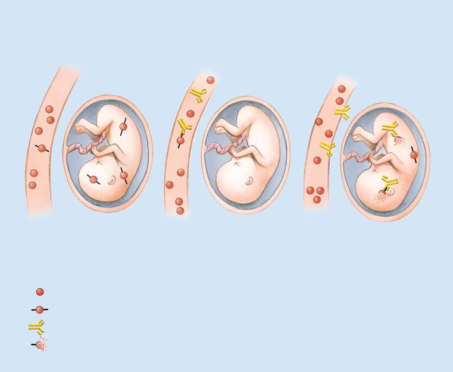
988 Capítulo 45
permeabilidad capilar. Puede perderse tanto plasma de la sangre que en pocos minutos es posible que ocurra un choque circulatorio e inclusive la muerte. Los síntomas de las reacciones alérgicas a menudo son tratados con antihistam í nicos , medicamentos que bloquean los efectos de la histamina. Estos medicamentos compiten por los mismos receptores sobre células que son objetivo de la histamina. Cuando el histamínico se combina con el receptor, evita que la histamina se una, evitando así sus efectos dañinos. Los antihistamínicos se usan clínicamente para aliviar los síntomas de la urticaria y la rinitis alérgica. No son del todo efi caces porque los mastocitos liberan moléculas distintas a la histamina que también pueden ocasionar síntomas alérgicos.
El rechazo de los injertos es una respuesta inmunológica contra el tejido trasplantado
La piel puede trasplantarse exitosamente de una parte del mismo cuerpo a otra o de un gemelo idéntico a otro. No obstante, cuando de una persona se toma piel y es trasplantada al cuerpo de un no gemelo, es rechazada y después se desprende. ¿Por qué? Recuerde que los tejidos de la misma persona o de gemelos idénticos tienen alelos CHM idénticos y por ello los mismos antígenos CHM. Debido a que para cada uno de los genes CHM hay muchos alelos, resulta difícil encontrar coincidencias idénticas entre gemelos no idénticos. Cuando un tejido u órgano es tomado de un donante y trasplantado al cuerpo de un huésped no gemelo, es probable que varios de los antígenos CHM sean diferentes. El sistema inmunológico del huésped
produce una respuesta del alérgeno IgE. Los mastocitos liberan sustancias que provocan que el músculo liso se contraiga, y las vías respiratorias en los pulmones algunas veces se contraen durante varias horas, difi cultando la respiración. El asma alérgico es tratado con esteroides, que bloquean la producción de citocina, y con fármacos, como inhibidores de leucotrienos, que bloquean la unión de mediadores infl amatorios con músculo liso en las vías respiratorias. Los leucotrienos son compuestos infl amatorios liberados por los mastocitos. Los inhibidores de leucotrienos reducen la infl amación y disminuyen la incidencia del asma y episodios de rinitis alérgica en personas con sistemas inmunológicos hipersensibles. Los anticuerpos monoclonales al IgE también son útiles para el tratamiento de estos trastornos porque reducen los niveles de IgE en la sangre. Ciertos alimentos o medicamentos actúan como alérgenos en algunas personas, provocando una reacción en las paredes del tracto digestivo que conduce a malestar y diarrea. El alérgeno puede ser absorbido y provocar que los mastocitos liberen gránulos en otras partes del cuerpo. Cuando en la piel ocurre la reacción al alérgeno IgE, la histamina liberada por los mastocitos origina la infl amación de ronchas rojas conocida como urticaria, o ronchas. La anafi laxis sistémica es una reacción alérgica peligrosa que puede ocurrir cuando una persona desarrolla una alergia a algún medicamento específi co, como la penicilina; a compuestos en el veneno inyectado por la picadura de insectos; e inclusive a ciertos alimentos. Pocos minutos después que la sustancia entra al cuerpo, ocurre una reacción alérgica extendida. Los mastocitos liberan grandes cantidades de histamina y otros compuestos hacia la circulación, que provocan vasodilatación extrema y
Exposición previa al polen provoca que las células de plasma elaboren IgE específico del polen.
El IgE se combina con mastocitos receptores en el revestimiento de las vías respiratorias. El polen es inhalado.
Los alérgenos se combinan con la región del IgE sobre la superficie de mastocitos sensibilizados. Los mastocitos liberan histamina y otros compuestos químicos.
Esta liberación ocasiona un incremento en la vasodilatación y en la permeabilidad de los capilares. Los síntomas resultantes son: edema, enrojecimiento, contracción de las vías respiratorias, secreción de mocos.
Granos de polen
Mucosa nasal
Célula de plasma
Antígenos solubles
IgE
Histamina y otros compuestos
Síntomas de rinitis alérgica
Mastocito
1
2
3
4
5
6
1
2
3 4
5
6
FIGURA 45-17 Una reacción alérgica Cuando muchas personas respiran polen, responden con rinitis alérgica (fi ebre del heno), un tipo común de reacción alérgica.
El sistema inmunológico: Defensa interna 989
En Estados Unidos, miles de pacientes requieren trasplantes de órganos. Debido a que el número de donantes humanos no satisface esta necesidad, los investigadores están desarrollando técnicas para cultivar células madre como tejidos de remplazamiento. Algunos investigadores están trabajando en métodos más efi caces para trasplantar tejidos y órganos animales a humanos. Algunos desafíos incluyen riesgos de transmisión de enfermedades animales a los humanos, así como el rechazo de injerto. Como donantes se han usado cerdos, pero contra estos órganos trasplantados se han lanzado respuestas inmunológicas destructivas. Debido a que los chimpancés y otros primates están estrechamente relacionados, pueden usarse como donantes con menor riesgo de rechazo de injerto. No obstante, consideraciones éticas han limitado estos trasplantes. Los investigadores están desarrollando métodos para manipular genéticamente a los cerdos y otros animales a fi n de que no produzcan antígenos que estimulen respuestas inmunológicas en destinatarios humanos. Luego, estos animales pueden ser clonados y usados como donantes de corazones, riñones y otros órganos. También se están desarrollando órganos artifi ciales efi caces. El cuerpo tiene unos cuantos sitios inmunológicamente privilegiados donde es aceptado el tejido ajeno. Por ejemplo, los trasplantes de córnea son bastante exitosos porque la córnea casi no tiene sangre asociada o vasos linfáticos asociados, por lo que está fuera del alcance de la mayoría de los linfocitos. Además, los antígenos en el injerto de córnea probablemente no encontrarían su camino hacia el sistema circulatorio, y en consecuencia no podrían estimular una respuesta inmunológica.
Repaso
■ ¿Cómo se defi ende el cuerpo a sí mismo contra el cáncer?
■ ¿Cómo infecta el VIH al cuerpo? ¿Cómo lo afecta?
■ ¿Qué es una enfermedad autoinmune? Proporcione dos ejemplos.
■ ¿Cuál es la secuencia de eventos inmunológicos que se llevan a cabo en un tipo de reacción alérgica común como, por ejemplo, rinitis alérgica?
■ ¿Cuál es la base inmunológica para el rechazo de injerto?
considera el injerto como ajeno y lanza una respuesta inmunológica denominada rechazo de injerto . En la primera etapa del rechazo, la etapa de sensibilización , las células T A y las células T C reconocen los antígenos extraños. En la segunda etapa, la fase efectora , las células T C , el sistema del complemento y las citocinas secretadas por las células T A atacan el tejido trasplantado y pueden destruirlo en menos de una semana. La secuencia de eventos en el rechazo de injerto puede resumirse como sigue:
el tejido del donante trasplantado al cuerpo del destinatario ¡ las
células T A y células T C reconocen como ajenos los antígenos CHM
sobre las células del trasplante ¡ las células T A secretan citocinas,
el sistema del complemento es activado y las células T A destruyen las
células del trasplante
Para evitar rechazo de injerto, los tejidos del paciente y de donantes potenciales deben tipifi carse y hacerse coincidir tanto como sea posible. La tipifi cación de células es algo semejante a la tipifi cación del grupo sanguíneo, aunque más complicada. Si todos los antígenos CHM coinciden, el injerto tiene alrededor de 95% de posibilidades de sobrevivir el primer año. Desafortunadamente, no muchas personas son lo sufi cientemente afortunadas en tener un gemelo idéntico que les abastezca de refacciones, por lo que las coincidencias perfectas son difíciles de encontrar. Además, de algunos órganos, como el corazón, no se puede prescindir. En consecuencia, la mayoría de los órganos trasplantados proviene de donantes no relacionados, a menudo de pacientes que acaban de fallecer. Para evitar el rechazo de injerto en coincidencias menos compatibles, los médicos usan medicamentos antirrechazo como la ciclosporina para suprimir el sistema inmunológico. La ciclosporina impide que las células T produzcan citocinas. Desafortunadamente, la inmunosupresión hace que el paciente que ha recibido el trasplante sea más vulnerable a neumonía u otras infecciones y aumenta el riesgo de adquirir ciertos tipos de cáncer. Al cabo de los primeros meses, es posible reducir las dosis de los medicamentos inmunosupresores. Los investigadores están trabajando para desarrollar técnicas de inmunosupresión más efi caces.
45.1 (página 964)
1 Distinguir entre respuestas inmunológicas no específi cas y específi cas.
■ Las respuestas inmunológicas son las respuestas defensivas del cuerpo contra patógenos (organismos que causan enfermedades), toxinas y otros agentes dañinos. En las respuestas inmunológicas, el cuerpo reconoce macromoléculas extrañas o peligrosas y responde para eliminarlas. Las respuestas inmunológicas no específi cas proporcionan protección general e inmediata contra patógenos, algunas toxinas y drogas, así como contra células cancerosas.
■ Las respuestas inmunológicas específi cas se dirigen hacia distintos antígenos , moléculas reconocidas como extrañas o peligrosas por células del sistema inmunológico. El sistema inmunológico produce anticuerpos , proteínas altamente específi cas que reconocen y se unen con antígenos específi cos. Otra característica defi nitoria de la inmunidad específi ca es la memoria inmunológica ; es decir, el sistema “recuerda” moléculas extrañas o peligrosas y responde más fuertemente a encuentros repetidos con las mismas moléculas. 2 Comparar, en términos generales, las respuestas inmunológicas que han evolucionado en los invertebrados y los vertebrados.
■ Los invertebrados dependen principalmente de respuestas inmunológicas no específi cas, como barreras físicas; fagocitosis (envolver y destruir patógenos); receptores que reconocen patrones moleculares asociados
con patógenos; y péptidos antimicrobianos (moléculas solubles que destruyen patógenos).
■ Los vertebrados usan respuestas inmunológicas no específi cas y respuestas inmunológicas específi cas.
45.2 (página 966)
3 Describir respuestas inmunológicas no específi cas, incluyendo barreras físicas; reconocimiento por receptores de reconocimiento de patrones; acciones de fagocitos y otras células; acciones de citocinas y complemento; y la respuesta infl amatoria.
■ Las respuestas inmunológicas no específi cas incluyen barreras físicas, como la piel y los revestimientos epiteliales de los tractos respiratorio y digestivo. Las membranas epiteliales producen péptidos antimi crobianos.
■ Cuando los patógenos rompen las defensas de la primera línea, patrones moleculares asociados a patógenos , o PMAP , se unen con receptores de reconocimiento de patrones y activan otras defensas no específi cas. Los patrones moleculares asociados a patógenos son conjuntos de rasgos moleculares comunes que son característicos de cada clase de patógenos. Los receptores de reconocimiento de patrones mejor conocidos son los receptores de tipo toll , receptores sobre fagocitos y ciertos otros tipos de células.
■ ■ RESUMEN: ENFOQUE EN LOS OBJETIVOS DE APRENDIZAJE
990 Capítulo 45
45.4 (página 973)
6 Describir la secuencia de eventos en la inmunidad mediada por células.
■ En la inmunidad mediada por células, células T específi cas son activadas por un complejo CHM-antígeno extraño sobre la superfi cie de una célula infectada. También se requieren una molécula coestimuladora e interleucinas. Las células T C activadas se multiplican y dan origen a un clon, un proceso conocido como expansión clonal . Estas células diferenciadas migran al sitio de la infección y destruyen las células infectadas por patógenos. Las células T A activadas originan un clon de las células T A , que secreta citocinas que activan a células B y macrófagos.
45.5 (página 975)
7 Resumir la secuencia de eventos en la inmunidad mediada por anticuerpos, incluyendo los efectos de complejos antígeno-anticuerpo sobre patógenos.
■ En la inmunidad mediada por anticuerpos, son activadas células B cuando se combinan con anticuerpos. La activación requiere tanto una CPA (como una célula dendrítica o un macrófago) que tenga expuesto un complejo CHM-antígeno extraño sobre su superfi cie y una célula T A que secrete interleucinas.
■ Cuando las células B activadas se multiplican, dan origen a clones de células. Las células clonadas se diferencian y forman células de plasma. Las células de plasma producen anticuerpos específi cos, denominados inmunoglobulinas (Ig) , en respuesta a los antígenos específi cos que las activaron. Un anticuerpo se combina con un antígeno específi co para formar un complejo antígeno-anticuerpo , que puede inactivar al patógeno, estimular fagocitosis, o activar el sistema del complemento.
Observe la inmunidad mediada por células y la inmunidad mediada por anticuerpos haciendo clic en las fi guras en CengageNOW .
8 Describir la estructura y función básicas de un anticuerpo, y explicar la base de la diversidad de los anticuerpos.
■ Una molécula anticuerpo consta de cuatro cadenas de polipéptidos: dos cadenas pesadas idénticas, y dos cadenas ligeras más cortas. Cada cadena tiene una región constante (C) y una región variable (V) . En un anticuerpo con confi guración en Y, los dos brazos se combinan con el antígeno.
■ La reagrupación de segmentos de ADN durante la diferenciación de las células B es el principal factor responsable de la diversidad de los anticuerpos; se producen millones de tipos diferentes de células B (y T).
Aprenda más sobre la estructura, función y diversidad de los anticuerpos haciendo clic en las fi guras en CengageNOW.
9 Describir la base de la memoria inmunológica, y contrastar las respuestas inmune primaria y secundaria.
■ Después de una infección, las células B de memoria y las células T de memoria permanecen en el cuerpo. Estas células son responsables de la inmunidad a largo plazo.
■ La primera exposición a un antígeno estimula una respuesta inmune primaria . Una segunda exposición al mismo antígeno evoca una respuesta inmune secundaria , que es más rápida e intensa que la respuesta primaria.
■ Los fagocitos , incluyendo los neutrófi los y los macrófagos , destruyen bacterias. Las células asesinas naturales ( NK ) destruyen células infectadas por virus y células extrañas o modifi cadas como las células cancerosas. Las células dendríticas liberan proteínas antivirales denominadas interferonas.
■ Las citocinas son proteínas de señalización que regulan las interacciones entre células. Algunos grupos importantes son las interferonas, los factores de necrosis tumoral, las interleucinas y las quimiocinas. Las interferonas inhiben la replicación viral y activan a las células asesinas naturales. El factor de necrosis tumoral (FNT) estimula a las células inmunes a iniciar una respuesta infl amatoria. Las interleucinas ayudan a regular las interacciones entre los linfocitos y otras células del cuerpo, ayudan a mediar la infl amación y pueden mediar la fi ebre. Las quimiocinas atraen, activan y dirigen el movimiento de ciertas células del sistema inmunológico.
■ Las proteínas del complemento producen lisis en la pared celular de los patógenos; recubren a los patógenos, mejorando así la fagocitosis; y atraen glóbulos blancos al sitio de la infección. Estas acciones mejoran la respuesta infl amatoria.
■ Cuando los patógenos invaden los tejidos, activan una respuesta infl amatoria , que incluye tres procesos principales: vasodilatación, que lleva más sangre al área de la infección; un aumento en la permeabilidad de los capilares, que permite que fl uidos y anticuerpos salgan de la circulación y entren en los tejidos; y un aumento en fagocitosis. En respuesta a la infección, los mastocitos liberan histamina y otros compuestos que provocan vasodilatación y un incremento en la permeabilidad capilar.
Observe las respuestas inmunológicas, incluyendo la respuesta infl amatoria, haciendo clic en las fi guras en CengageNOW.
45.3 (página 970)
4 Contrastar la inmunidad mediada por células y la inmunidad mediada por anticuerpos, y proporcionar una visión general de cada proceso.
■ En la inmunidad mediada por células , son activadas células T específi cas; las células T liberan proteínas que destruyen células infectadas por virus u otros patógenos intracelulares.
■ En la inmunidad mediada por anticuerpos , son activadas células B específi cas; las células B se multiplican y diferencian en células de plasma, que producen anticuerpos. 5 Describir las funciones de las células principales del sistema inmunológico específi co y del complejo de histocompatibilidad más importante.
■ Dos tipos de células importantes en las respuestas inmunológicas específi cas son los linfocitos y las células presentadoras de antígeno. Los linfocitos se desarrollan a partir de células madre en la médula espinal. Las células T son linfocitos responsables de la inmunidad mediada por células. La glándula timo confi ere inmunocompetencia sobre las célu las T al hacerlas capaces de distinguir entre lo propio y lo ajeno. Hay varios tipos de células T, incluyendo células T citotóxicas (células T C ) , células T ayudadoras (T A ) , células T C de memoria , células T A de memoria y células T reguladoras (Tregs) . Las células T se distinguen por sus receptores de células T (RCT) .
■ Las células B son linfocitos responsables de la inmunidad mediada por anticuerpos. Las células B se diferencian en células de plasma , que producen anticuerpos. Algunas células B activadas se convierten en células B de memoria , que continúan produciendo anticuerpos después que el cuerpo ha superado la infección.
■ Las células presentadoras de antígeno (CPA) , incluyendo las células dendríticas, los macrófagos y las células B, muestran antígenos extraños, así como sus propias proteínas superfi ciales. Las células dendríticas están especializadas en procesar, transportar y presentar antígenos.
■ Las respuestas inmunológicas dependen del complejo de histocompatibilidad mayor ( CHM ), un grupo de genes que codifi can proteínas CHM. Los genes CHM clase I codifi can autoantígenos, glicoproteínas expresadas sobre la superfi cie de la mayoría de las células nucleadas. Los genes CHM clase II codifi can glicoproteínas expresadas sobre células presentadoras de antígeno del sistema inmunológico. Los genes CHM clase III codifi can componentes del sistema del complemento y factores de necrosis tumoral.
El sistema inmunológico: Defensa interna 991
células T auxiliares, perjudicando seriamente la inmunidad y poniendo al paciente en riesgo de infecciones oportunistas. 12 Describir ejemplos de hipersensibilidad, incluyendo enfermedades autoinmunes, incompatibilidad del Rh, y reacciones alérgicas, y resumir las bases inmunológicas del rechazo de injertos.
■ En enfermedades autoinmunes , el cuerpo reacciona inmunológicamente contra sus propios tejidos.
■ Cuando una mujer Rh negativa da a luz a un bebé Rh positivo, puede desarrollar anticuerpos anti-D. Entonces puede ocurrir incompatibilidad del Rh en embarazos futuros.
■ En una reacción alérgica , un alérgeno estimula la producción de IgE, que se combina con receptores sobre células madre. Las células madre liberan histamina y otras moléculas que provocan infl amación y otros síntomas de alergia. La anafi laxis sistémica es una reacción alérgica rápida y extendida que puede ocasionar la muerte.
■ Los tejidos trasplantados tienen antígenos CHM que estimulan el rechazo de injerto , una respuesta inmunológica en la que células T destruyen el trasplante.
10 Comparar la inmunidad activa con la inmunidad pasiva, y proporcionar ejemplos de cada una.
■ La inmunidad activa se desarrolla como resultado de la exposición a antígenos; puede ocurrir naturalmente después de la recuperación de una enfermedad o puede ser inducida artifi cialmente por inmunización con una vacuna.
■ La inmunidad pasiva es una condición temporal que se desarrolla cuando una persona recibe anticuerpos producidos por otra persona o animal.
45.6 (página 982)
11 Describir la respuesta del cuerpo a las células cancerosas y al VIH.
■ Las células NK, los macrófagos, las células T y otras células del sistema inmunológico reconocen antígenos sobre células cancerosas y lanzan una respuesta inmunológica contra ellos. Las células cancerosas evaden al sistema inmunológico al bloquear T C directamente o al disminuir las moléculas CHM clase I sobre las células T C .
■ El síndrome de inmunodefi ciencia adquirida (SIDA) es provocado por el virus de inmunodefi ciencia humana (VIH) , un retrovirus. El VIH destruye
Las respuestas inmunológicas no específi cas (innatas) incluyen todo lo siguiente excepto (a) infl amación (b) complejos antígeno-anticuerpo (c) la unión de PMAP con receptores de reconocimiento de patrones (d) complemento (e) fagocitosis
Las citocinas (a) son receptores de tipo toll reguladores (b) previenen la respuesta infl amatoria (c) incluyen interferonas e interleucinas (d) son inmunoglobulinas (e) b y c son correctas
¿Cuál de lo siguiente no es una acción del complemento? (a) mejoran la fagocitosis (b) mejoran la respuesta infl amatoria (c) recubren a los patógenos (d) ocasionan la lisis en virus (e) estimulan la producción de células B de memoria
¿Cuáles de las siguientes son células presentadoras de antígeno? (a) células NK y monocitos (b) macrófagos y células de plasma (c) células dendríticas y macrófagos (d) células madre y células B (e) células T de memoria y células de plasma
¿Cuáles de las siguientes células son especialmente adeptas a destruir células tumorales? (a) células NK (b) células de plasma (c) neutrófi los (d) células citotóxicas (e) células madre
¿Cuáles de las siguientes células se vuelven inmunológicamente competentes después de procesarse en la glándula timo? (a) células NK (b) células T (c) macrófagos (d) células B (e) células de plasma
El complejo de histocompatibilidad mayor (CMH) (a) consta de moléculas con confi guración en Y (b) codifi ca ciertos anticuerpos (c) codifi ca receptores de tipo toll (d) inhibe la liberación del complemento por los macrófagos (e) codifi ca un grupo de proteínas en la superfi cie celular
¿Qué secuencia describe con más precisión la inmunidad mediada por anticuerpos? 1. las células B se dividen y dan origen a un clon 2. se producen anticuerpos 3. las células se diferencian y forman células de plasma 4. células auxiliares T interactúan con células B que muestran el mismo complejo antígeno B 5. se activan células B (a) 1, 2, 3, 4, 5 (b) 3, 2, 1, 4, 5 (c) 4, 5, 3, 2, 1 (d) 4, 5, 1, 3, 2 (e) 4, 3, 1, 2, 5
La inmunoglobulina A (a) reconoce patrones moleculares asociados con patógenos (b) se une con células NK (c) evita que los patógenos se fi jen en superfi cies epiteliales (d) se encuentra principalmente sobre la superfi cie de células dendríticas (e) se encuentra principalmente sobre la superfi cie de células T.
Cuando una persona es expuesta por segunda vez al mismo antígeno, la respuesta es (a) menos específi ca (b) más rápida (c) mediada por células dendríticas (d) probable que conduzca al desarrollo de una enfermedad autoinmune (e) una reacción de hipersensibilidad
En una reacción alérgica, (a) un alérgeno se une con IgE (b) el cuerpo es inmunodefi ciente (c) células auxiliares T liberan histamina (d) las células de plasma producen alérgenos (e) se desactivan las células madre
Rotule el diagrama y explique lo que ilustra el diagrama. (Consulte el paso 3 en la fi gura 45-7 para comprobar sus respuestas).
Célula B activada
Célula T A
División celular
EVALÚE SU COMPRENSIÓN
992 Capítulo 45
Algunos rasgos clave del sistema inmunológico son especifi cidad, diversidad y memoria. Proporcione ejemplos específi cos para explicar la forma en que cada uno de estos rasgos es importante.
¿Cuáles serían los efectos de una pérdida total de macrófagos en el cuerpo? ¿Qué cree usted que tendría un mayor efecto sobre el sistema inmunológico: la pérdida de macrófagos o la pérdida de células B?
¿Cuáles son las ventajas de tener antígenos CHM? ¿Y las desventajas? ¿Cuáles cree que serían las consecuencias de no contar con ellos?
Juan y Pedro son expuestos a sarampión por una condiscípula. Juan ya está vacunado contra el sarampión, pero Pedro aún no. ¿Cuáles son las diferencias en sus respuestas inmunológicas? Cinco años después, Juan y Pedro están jugando con Julia, que está siendo atacada por el sarampión y estornuda frente a ellos. Compare sus respuestas inmunológicas.
VÍNCULO CON LA EVOLUCIÓN. Las enzimas Rag1 y Rag2 cortan y reordenan el ADN, produciendo millones de anticuerpos y receptores de células T. Hasta hace poco, los inmunólogos consideraban que los genes ( Rag1 y Rag2 ) que codifi can estas enzimas sólo se
encontraban en vertebrados con mandíbula. No obstante, los investigadores encontraron recientemente genes semejantes en el erizo de mar púrpura. ¿Qué sugiere este descubrimiento sobre la evolución del sistema inmunológico específi co?
VÍNCULO CON LA EVOLUCIÓN. Los peces tienen sólo una clase de anticuerpos, IgM. Los anfi bios tienen dos clases, y el número aumenta hasta cinco clases en los mamíferos. Conjeture una ventaja adaptativa de tener una mayor variedad de grupos de anticuerpos.
CIENCIA, TECNOLOGÍA Y SOCIEDAD. Imagine que usted es un investigador que está desarrollando nuevos tratamientos para el VIH. ¿Qué métodos asumiría? ¿Qué decisiones de salud pública considera que podrían ayudar a disminuir la difusión del SIDA mientras nuevas vacunas están en proceso de desarrollo?
Preguntas adicionales se encuentran disponibles en Cengage NOW en www.cengage.com/login.
PENSAMIENTO CRÍTICO